Customization Guide V4.61

VIRTEL Customization
Warning
This is a draft version of the document.
Version : 4.61 Draft
Release Date : TBA. Publication Date : 10/10/2021
Syspertec Communication
196, Bureaux de la Colline 92213 Saint-Cloud Cedex Tél. : +33 (0) 1 46 02 60 42
Note
Reproduction, transfer, distribution, or storage, in any form, of all or any part of the contents of this document, except by prior authorization of SysperTec Communication, is prohibited.
Every possible effort has been made by SysperTec Communication to ensure that this document is complete and relevant. In no case can SysperTec Communication be held responsible for any damages, direct or indirect, caused by errors or omissions in this document.
As SysperTec Communication uses a continuous development methodology; the information contained in this document may be subject to change without notice. Nothing in this document should be construed in any manner as conferring a right to use, in whole or in part, the products or trademarks quoted herein.
“SysperTec Communication” and “VIRTEL” are registered trademarks. Names of other products and companies mentioned in this document may be trademarks or registered trademarks of their respective owners.
Summary of Amendments
Virtel version 4.61 (11th Oct 2021)
Note
For further details see the Virtel Technical Newsletter TN202101: Whats new in Virtel 4.61.
IPV6 Support
Virtel 4.60 introduces support of IPV6. Throughout this document IP addresses default to the IPV4 construct - 192.168.048.002:41001 but this can also be read as an IPV6 construct. For example [http://[fd10:15c1:1921:a1a6::31]:41001. In all cases the square brackets are essential.
W2H Customization
Customization of Virtel can be implemented through customization of the following elements:
Custom CSS files, including Print Style CSS files.
Custom JavaScript files.
Custom setting parameters.
Custom Help pages.
As delivered, Virtel provides a dummy settings member, W2HPARM.JS, which is located in both the W2H-DIR and CLI-DIR. Note that any customization should only be made to the CLI-DIR or any other customer directories. No changes should be made to the W2H-DIR as these changes will be lost during any Virtel upgrade or migration.
Levels of customization
Depending on how Virtel is implemented at a site will determine what level of customization is required. For most users, simple modification of the default settings may be all that is required. This can be achieved just by modifying the supplied dummy W2HPARM.JS in the CLI-DIR assuming that this is the only directory in use for any “user” transactions. The setting defaults are listed in Appendix A of the Virtel User Guide.
More complex installations may require different levels of customization invoking bespoke CSS and JavaScript members. Furthermore, different customization levels may be required for different Entry points and underlying transactions. The “Option” level of customization meets these requirements.
Settings member W2HPARM.JS
The Virtel settings member is a JavaScript object consisting of a key:value construct. The key representing the Virtel setting and the value the associated setting. Note that a key value can be another object as is the case in the “global-settings” and “useVirtelMacros” values. Keys names are case sensitive - key “w2hparm” is different to “W2hparm”. Invalid keys name will be ignored by Virtel. Key names are enclosed in quotes when defined within the w2hparm object, for example:
var w2hparm = {
"ctrl":"Newline",
};
but if a property is defined outside of the object definition, no quotes are specified. For example:
w2hparm.ctrl = "Newline";
See Appendix A of the Virtel Users Guide for a full list of “key” names and associated default values.
Setting a Joker Key
The JokeyKey setting may be used to redefine keys on a keyboard to a one of the following functions - Reset, Ins, ATTN, Clear. For example, to redefine a key as an Insert key for keyboards that do not have an Insert key.
First set which key will be the Joker Key in w2hparm.js
w2hparm.jokeykey=192; // Leftmost key on second row of US keyboard
To determine the scancode of a key use the scancode tester by entering the following URL
http://192.168.170.48:41001/w2h/scancode.htm
Administrators can preset the joker key function with
- ::
w2hparm.joker | shiftjoker | altjoker = “Ins”
Note
A user can set the function assigned to the Joker Key through the user settings.
 Settings Panel showing SHIFT Joker key assignments
Settings Panel showing SHIFT Joker key assignments
Displaying customized members
To display a settings member use the following URLs as examples:
http://192.168.170.48:41002/w2h/w2hparm-js/w2hparm.js
Example of displaying the w2hparm.js member
To display a customized option member use the following URL:
http://192.168.170.48:41002/option/w2hparm.global.js
Example of displaying a global option member
Common settings member
If it is required that a common set of settings member be used for both W2H-DIR and CLI-DIR than a small modification to the W2H-DIR transaction, W2H-03P, is required. Changing the location directory from W2H-DIR to CLI-DIR will ensure that settings will be derived from the CLI-DIR W2HPARM.JS member. For example if you modify a key settings, which keyboard key reflects they “ENTER” key for example, than this change can used by both W2H and CLI transactions. An example of a modified W2H-03P transaction is displayed below:
Example of W2H-03P pointing at the CLI-DIR
The following JCL may also be used to modify the W2H-03P transaction.
Note
Virtel must not be running when using the VIRCONF program to update transactions:
// SET LOAD=HLQ.VIRTEL.LOADLIB
// SET ARBO=HLQ.VIRTEL.ARBO
//*
//CONFIG EXEC PGM=VIRCONF,PARM='LOAD,REPL',REGION=2M
//STEPLIB DD DSN=&LOAD,DISP=SHR
//SYSPRINT DD SYSOUT=*
//SYSUDUMP DD SYSOUT=*
//VIRARBO DD DSN=&ARBO,DISP=SHR
//SYSIN DD *
TRANSACT ID=W2H-03P,
NAME='w2h',
DESC='Directory for w2hparm.js',
APPL=CLI-DIR,
TYPE=4,
TERMINAL=DELOC,
STARTUP=2,
SECURITY=0,
LOGMSG='/w2h/w2hparm-js'
Global Level Options
Virtel implements a “global” option customized level whereby all customized elements apply to all transactions of a particular Entry Point. Each Entry Point may have its own “global” options. To implement global option customization, the W2HPARM.JS settings member is modified to contain a global settings object whose attributes point to members located in the options directory OPT-DIR.
var w2hparm = {
"global-settings":{
"pathToJsCustom":"../option/custJS.global.js",
"pathToCssCustom": "../option/custCSS.global.css",
"pathToW2hparm":"../option/w2hparm.global.js",
"pathToFavicon": "../option/cust-favicon.ico"
"pathToHelp": "../option/myHelp.html"
}
}
The “option” pathname is normally associated with the OPT-DIR. The directory is pointed to by the OPTION transaction CLI-03CO and by default is the CLI-DIR:
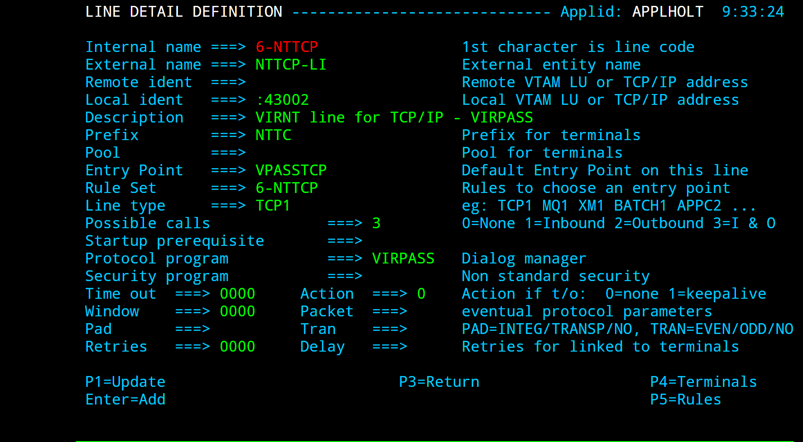
Example of option transaction
Each property of the global-settings object uses a “pathTo” property which has the following pattern:- “pathTo.key.id.type” where:
key = W2hparm | CssCustom | JSCustom | PrintCss | Help | Favicon Case sensitive.
id = "global" or a transaction option identifier Option "id"
type = css | html | js Type
Global-settings object can contain the following pathTo properties:
"pathToJsCustom" - Customized JavaSCript elements
"pathToW2hparm" - Customized w2hparm parameters
"pathToCssCustom" - Customized CSS stylesheets
"pathToPrintCss" - Customized Print CSS Style sheets
"pathToHelp" - Customized Help pages
"pathToFavicon" - Customized Favicon image
Restart Virtel after uploading the W2HPARM.JS and other global members. Refresh the cache then check that the correct settings are being used using the following URLs to list w2hparm.js and w2hparm.global.js:
http://192.168.170.48:41002/w2h/w2hparm-js/w2hparm.js
var w2hparm = {
"global-settings":{
"pathToW2hparm":"../option/w2hparm.global.js"
}
};
Example of w2hparm.js pointing to a global parm member
http://192.168.170.48:41002/option/w2hparm.global.js
The output from this display should show the DDI/Macros options that we used in compatibility mode.
var w2hparm = {"ctrl":"Newline",
"enter":"ENTER",
"pgup":"PA1",
"pgdn":"PA2",
"useVirtelMacros":{"macrosAutoRefresh":"session"}
};
w2hparm.keymapping=true;
Example of a wh2parm.global.js member
Adding your Company Logo to Virtel Toolbar using global options
Update the following two files:-
custCSS.[key name].css Cascading style sheet customisation for company logo
Append to you existing Cascading Style sheet the following additional style sheet definitions along with a .jpeg or .png file containing the company logo. Use the Chrome debugger tool to help determine the proper logo size.
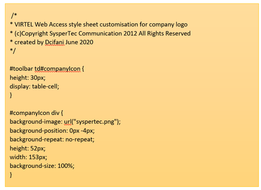
w2hparm.js Update or add a Global settings w2hparm.js file.
The Global VWA display setting file also has 2 parameters used to apply .css customization to all transactions. Add the last two lines below to your existing w2hparm.js file. This will apply the custCSS.CLIENT.css setting to all defined Virtel Transactions.
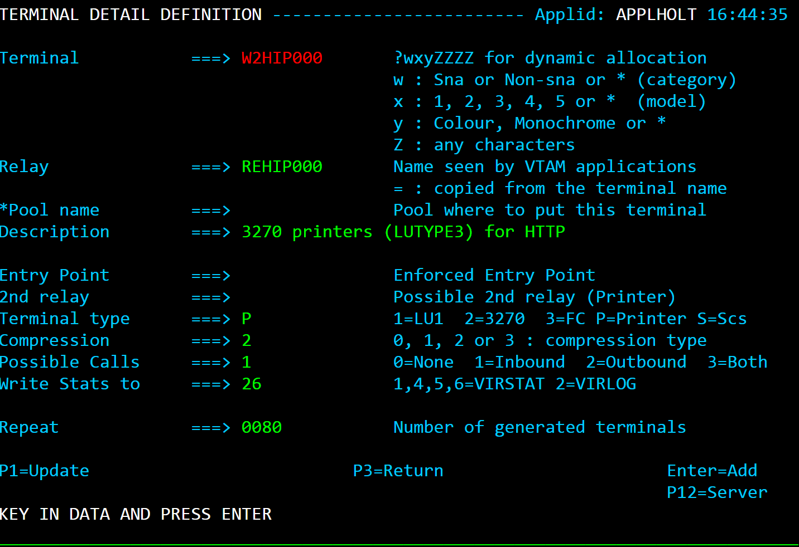
From the Administration panel select the VWA customized files, the custCSS,[key name],css and the w2hparm.js file with the global setting, and upload to your CLI directory using the Virtel Drap and drop function.

Note
Refresh your browser cache and Reconnect to the Application Menu to see the results.
Transaction Level Options
Some transactions may require a different set of options or settings than those defined at the Entry Point or Global level. For example, certain transactions may have a modified Tool Bar containing a Printer Icon. Transactions which require such specific customization should have a unique option identifier or “Id” associated with the transaction definition. This “id” will pull in a different set of options “key”:”values” settings and will override the “global” settings. The option “id” will be used to associate customized elements against specific transaction(s).
In the following example the value “myOptions” has been chosen as an “id” for a particular transaction. A transaction level “core option file”, using the format “option.id.js”, will be used to locate they customized elements. In this example we are using a customized JavaScript member to add a “Printer Icon” to the Virtel Toolbar. Using the option “id” of “myOptions” a javascript file will be created called “option.myOptions.js”. This will be uploaded to CLI-DIR. Customized settings for transactions are held in a JavaScript object called “oCustom”. Here is an example of the myOptions JavaScript file:
//CLI-DIR - option.myOptions.js. Transaction level core option file
var oCustom={
"pathToJsCustom":"../option/custJS.myOptions.js"
}
Example of a core option file for customized JavaScript
This “”core option file” points to our customized JavaScript member for this transaction. This member contains the Virtel JavaScript function “after_standardInit” which will be called after initialization to modify the standard Virtel Tool Bar:
//CLI-DIR - custJS.myOptions.js
//Add Print Button To Toolbar
function after_standardInit() {
addTool Barbutton(000,"../print.ico","Print Screen",do_print);
}
function do_print() {
// do_print function
}
Example of customized JavaScript element associated with a transaction
To support this customized transaction the following two files are uploaded to the OPT-DIR or options directory:
- ::
option.myOptions.js - core option file for identifier “myOptions”. Points to the custom javascript file for transactions which have option=myOptions set. custjJS.myOptions.js - customized java script file for “myOptions”.
Note
More than one transaction within an Entry Point can point to the same “id” option files.
Defining Transaction Options
The Virtel User Guide contains further information on how to use GUI based controls to create the necessary customization members and associated files for transaction settings customization. See the section “Defining Transaction Options” in the Customization section for further details.
Customizable JavaScript User Exits
Virtel provides the following JavaScript functions that can be customized to give bespoke behavior. The custom.js file is load when a session started. This function, which is normally empty, can contain bespoke javascript functions which are called at strategic exits points during the life of a Virtel transaction. The functions are:
before_submitForm(pfKey,oFrom) - Called before submitting a Virtel request.
Arguments *pfKey* The Name of the key pressed. "ENTER","PF1",etc. *oForm* Form DOM object to be submitted. (usually document.virtelForm)
after_standardInit() - Called after a session with the host application has started.
after_responseHandle(o,url,xtim) - Called after receiving a response from the VIRTEL server.
Arguments *o* XMLHttpRequest object (status and responseText) *url* The URL which was used in the request *xtim* JavaScript Date object of time request was sent to the server
modify_settingsValues(name,values) - Allows modification of settings before parameters are displayed in the Settings Menu. It allows the list of values to be modified.
Arguments *name* The parameter name *values* The list of possible values. The return value is treated as the new value. If the function returns null or undefined, the list remains unchanged.
when_init() - Called for each sub-page after vir3270 initialization.
when_focusGained() - Called whenever the 3270 window gains focus.
when_focusLost() - Called whenever the 3270 window loses focus.
Virtel Web Access Interface
VWA User Interface
The VIRTEL Web Access user interface is in the form of a conventional 3270 screen divided into three areas:
The Tool Bar located in the upper of the screen contains the icons of functions (1), the information environment (2),the language selection (3).
The status line at the bottom includes the monitoring zone (4), particulars of the terminals associated with the session(5), mode and cursor position (6).
The area between the Tool Bar and the status bar is used to display the contents of 3270 screens, it can be of variable size between 24x80 and 62x132.
 The VWA 3270 screen areas
The VWA 3270 screen areas
Title
Add User Name to Title Tab
You can add the User Name into the title tab by using the following function in a custom.js file:
function after_responseHandle() {
document.title =document.body.className + “-“ + getUserId();
}
Example to add User Name to Title Tab.
Tool bar
The Tool Bar is located at the top of the 3270 screen. It contains, icons, language selection tool and environment information. Some of those component can be removed, added or modified.
Hiding the Tool Bar
The administrator may prevent access to features like copy/paste, print, and settings by removing the corresponding Tool Bar icons, or by hiding the Tool Bar altogether. This example shows how to hide the Tool Bar using a custom.css file:
/* VIRTEL Web Access style sheet for site customization
* (c)Copyright SysperTec Communication 2007,2010 All Rights Reserved
*/
#Tool Bar {display:none;}
Example custom.css for hiding the Tool Bar
You can also use custom.js to remove individual icons from the Tool Bar, see “Removing unwanted Tool Bar icons” on page 11.
Enable/Disable the Tool Bar display
The administrator can provide users with controls that enable or disable the display of the Tool Bar.
/*
* Configuration to allow the user to manage show/hide Tool Bar by himself.
*/
w2hparm.switchToolBarDisplay = true;
Example w2hparm.js to allow users to enable/disable the Tool Bar display
If this option is enabled, the “Alt + Insert” and “Alt + Home” keys in the Key Mappings tab control the “Tool bar” display. The user can these key assignments to control the Tool Bar display.

Key Mappings Setting Tab
These two assignments can also be predefined in the w2hparm.js file by using the commands:
/*
* Configuration to assign Alt+Insert and/or Alt+Home key to show/hide Tool Bar.
*/
"altins":"ToolBar" and/or
"althome":"ToolBar"
Example w2hparm.js to assign Alt+Insert and/or Alt+Home key to show/hide Tool Bar.
The Tool Bar can be automatically disabled at each new session opening by using the following command in w2hparm.js
/*
* Configuration to automatically hide the Tool Bar when opening a new session.
*/
"hideTool Bar":"true"
Example w2hparm.js to automatically hide the Tool Bar when opening a new session.
Under Virtel 4.57, those features require update #5555 or above to be applied.
Enable / Disable Maintenance Level
On the right side of the Tool Bar, the running version and the level of maintenance of VIRTEL is shown. This information is important in diagnosing problems. It can be hidden if the w2hparm.switchToolBarDisplay = true; option is set or the user selects to disable to Tool Bar.
Customize the Tool Bar color by application
It is sometimes useful for the user to have a clear visual indication of which system they are logged on to. This example shows how to set the color of the Tool Bar to yellow for SPCICSP and pink for SPCICSQ. Note that these names are the APPLID names that the transactions will connect to, they are not the transaction names.
/* VIRTEL Web Access style sheet for site customization
* (c)Copyright SysperTec Communication 2007,2010 All Rights Reserved
*/
.SPCICSP #toolbar {background-color:yellow;}
.SPCICSQ #toolbar {background-color:pink;}
Example custom.css for coloring the Tool Bar according to CICS region
 Web Access screen with yellow Tool Bar for SPCICSP
Web Access screen with yellow Tool Bar for SPCICSP
 Web Access screen with pink Tool Bar for SPCICSQ
Web Access screen with pink Tool Bar for SPCICSQ
Add a Web Link in the Tool Bar
You can add a web link in the Tool Bar by using the following order included in a custom.js file:
function after_standardInit() {
* Adds a button to the Tool Bar which performs a Google search
addTool Barbutton(position, "http://www.yourtargetsit.com/favicon.ico",
"Title", linked_function);
}
Example to add a web link in the Tool Bar.
Example : Add a Google Search link into the Tool Bar
function after_standardInit() {
/*
* Adds a button to the Tool Bar which performs a Google search for
* the text selected in the red box in the 3270 screen, or for the
* word at the cursor if no box is drawn
*/
addTool Barbutton(999, "http://www.google.com/favicon.ico",
"Search engine query", do_search);
}
function do_search() {
var searcharg = VIR3270.getBoxedText() || VIR3270.getWordAtCursor();
var windowname = "search";
var searchURL = "http://www.google.com";
if (searcharg) searchURL += "/search?q=" +
encodeURIComponent(searcharg.replace(/\s+/g, ""));
var windowopts = "location=yes,status=yes,resizable=yes," +
"scrollbars=yes,Tool Bar=yes,menubar=yes,width=640,height=480";
var searchwin = window.open(searchURL, windowname, windowopts);
if (searchwin) searchwin.focus();
}
Adding a Company Logo
This example shows how to display an icon (for example, a company logo) at the left of the Tool Bar:
/*
* VIRTEL Web Access style sheet customisation for company logo
* (c)Copyright SysperTec Communication 2012 All Rights Reserved
*/
#Tool Bar td#companyIcon {
height:30px;
display:table-cell;
}
#companyIcon div {
background-image:url("/w2h/virtblue.jpg");
background-position:0px -4px;
background-repeat:no-repeat;
height:26px;
width:145px;
}
Example custom.css for displaying company logo in the Tool Bar
This example shows how to replace the Virtel logo in the VIRTEL Web Access menu and the Application menu by your company logo:
/*
* VIRTEL Web Access style sheet for site customization
* (c)Copyright SysperTec Communication 2013 All Rights Reserved
* $Id$
*/
#appmenulogo {
background-image: url("mycompany.gif");
height: 65px;
width: 266px;
}
Example custom.css for replacing the Virtel logo by a company logo
Note
If no explicit path is given, the company logo will be loaded from the same directory as the custom.css file.
Tool Bar Icons
Adding a Tool Bar icon
This example uses the after_standardInit function to insert additional icons into the Tool Bar when the session is started. Icons may subsequently be added or removed from the Tool Bar after each screen by means of the after_responseHandle function.
/*
* (c)Copyright SysperTec Communication 2012 All Rights Reserved
* VIRTEL Web Access customer-specific javascript functions
*/
/*
* Adds a button to the Tool Bar which performs a Google search for
* the text selected in the red box in the 3270 screen, or for the
* word at the cursor if no box is drawn
* after_standardInit() function must be implemented in a custom.js file
*/
function after_standardInit() {
addTool Barbutton(999, "http://www.google.com/favicon.ico",
"Search engine query", do_search);
}
function do_search() {
var searcharg = VIR3270.getBoxedText() || VIR3270.getWordAtCursor();
var windowname = "search";
var searchURL = "http://www.google.com";
if (searcharg) searchURL += "/search?q=" +
encodeURIComponent(searcharg.replace(/\s+/g," "));
var windowopts = "location=yes,status=yes,resizable=yes,"+
"scrollbars=yes,Tool Bar=yes,menubar=yes,width=640,height=480";
var searchwin = window.open(searchURL, windowname, windowopts);
if (searchwin) searchwin.focus();
}
Example custom.js to customize the Tool Bar icons
Removing unwanted Tool Bar icons
This example uses the after_standardInit function to disable macro functions by removing the corresponding icons from the Tool Bar.
/*
* (c)Copyright SysperTec Communication 2017 All Rights Reserved
* VIRTEL Web Access customer-specific javascript functions
* after_standardInit() function must be implemented in a custom.js file
*/
function after_standardInit() {
/* Remove macro buttons from the Tool Bar */
removetoolbarbutton("startrecording");
removetoolbarbutton("playback");
}
Example custom.js to remove selected Tool Bar icons
The names of the other Tool Bar icons which can be removed in this way are:
capture,
disconnect,
document-print-preview,
edit-copy,
edit-cut,
edit-paste,
emptybuf,
file-rcv,
file-send,
help,
keypad,
playback,
printer,
settings,
settingsV2,
startrecording.
Note
(settingsV2 is présent only if w2hparms.js contains “settingsGUI”:{“version”:”V2”}, or “settingsGUI”:{“version”:”V1+V2”},)
File Transfer icons
The File Transfer icons are present in the Tool Bar only for access to TSO and if the transaction includes an INPUT and/or OUTPUT scenario with a call to the INDSCEN$ macro (See “TSO File Transfer” in “Virtel Web Access User Guide”).
Removing File Transfer Icons
VIRTEL Web Access supports transfer of files between the browser and a TSO session using the IND$FILE protocol. The function is activated displayed only for the transaction defined with the SCENINDT scenario entered in Input and Output scenario fields. For some specific users, it may be necessary to remove the file transfer icons from the Tool Bar. This can be done by using the removetoolbarbutton function using the appropriate variable name.(see “Removing unwanted Tool Bar icons”, page 11.)
Macro Icons
Removing Macro Icons
See “Removing unwanted Tool Bar icons”, page 11.
To hide the Tool Bar completely, see “Hiding the Tool Bar” on page 6. To hide only the Virtel Application name, see “Showing / Hiding server information”, on page 15.
Positioning Tool Bar Icons
In certain circumstances, the default position of an icon may not be at the user’s convenience. Is possible to change an icon’s position based on the position of another icon.
/*
* Customize the location of dynamic Tool Bar buttons.
* The calls to this function are ignored when they
* return nothing, or an integer not greater than 0.
*
* Customizable buttons IDs :
* > '3278T'
* > 'document-print-preview'
* > 'file-send'
* > 'file-recv'
* > 'printer'
*/
function customize_Tool BarButtonIndex(id) {
if (id==='printer' || id==='document-print-preview') {
return getToolbarButtonIndex('disconnect') + 1;
}
}
Example custom.js to select a position for printer icon
Centring User Icons
The recommended size for an icon is 32x32 pixels. For bigger or smaller icons, it possible to offer better center rendering by modifying the content of the CSS class attribute passed within the “addTool Barbutton” function.
/*
* (c)Copyright SysperTec Communication 2014 All Rights Reserved
* VIRTEL Web Access customer-specific javascript functions
* Resizing a too small or too big Tool Bar icon.
* For example toosmall_pic.png=22x22 and toobig_pic.jpg=145x30
*/
addTool Barbutton(999, "/w2h/toosmall_pic.png", "Custom button #1 tooltip",
do_search, "tbButton size22x22");
addTool Barbutton(999, "/w2h/toobig_pic.jpg", "Custom button #2 tooltip",
do_search, "tbButton size145x30");
Example custom.js to specify the Tool Bar icon size
/*
#Tool Bar td img.tbButton.size22x22 {
width: 22px;
height: 22px;
padding: 5px; /* padding is calculated to center the picture horizontaly
and verticaly in the 32x32 allocated area. (5+22+5 = 32) */
}
#Tool Bar td img.tbButton.size145x30 {
width: 145px;
height: 30px;
padding: 1px 0; /* padding is calculated to center the picture verticaly
in the 32x32 allocated area (1+30+1 = 32) without any horizontaly padding */
}
Example custom.css to manage a Tool Bar icon with a non standard size
Icon display troubleshooting
If Icons on the Tool Bar are not rendered correctly, check that the browser is not in a zoom mode greater than 100%.
Background information
Adding Application customized text to the Tool Bar
Another way of providing a clear visual indication of which application the user is logged on to is to add a text label to the Tool Bar. In this example the text “MVS1” is displayed when logged on to application TSO1A, and “MVS2” is displayed for application TSO2A.
/*
* VIRTEL Web Access style sheet for site customisation
* (c)Copyright SysperTec Communication 2007,2010 All Rights Reserved
*/
.toolbarLast{
text-align: right; /* Text alignment */
}
.TSO1A .toolbarLast:before {
content: "MVS1";
opacity: 0.25;
font-size: 30px;
width: 100%;
z-index: 1000;
-webkit-text-stroke: 1px blue; /* Select color */
padding-right: 5px; /* To separate cells */
}
.TSO2A .toolbarLast:before {
content: "MVS2";
opacity: 0.25;
font-size: 30px;
width: 100%;
z-index: 1000;
-webkit-text-stroke: 1px red; /* Select color */
padding-right: 5px; /* To separate cells */
}
Example custom.css for adding custom text to the Tool Bar
 Web Access screen with custom text in the Tool Bar
Web Access screen with custom text in the Tool Bar
Adding Transaction Application name to the Tool Bar
Adding Application Name from the transaction definition to the Tool Bar. In this example the text “TSO” is displayed when logged on to application TSO, and “SPCICSH” is displayed for application SPCICSH. Again, this is another way to provide feedback information to the user as to which system they are connected to.
/*
* VIRTEL Web Access style sheet for site customisation
* (c)Copyright SysperTec Communication 2007,2010 All Rights Reserved
*/
.toolbarLast{
text-align: right; /* Text alignment */
}
.TSO .toolbarLast:before {
content: "TSO";
opacity: 0.25;
font-size: 30px;
width: 100%;
z-index: 1000;
-webkit-text-stroke: 1px red; /* Select color */
padding-right: 5px; /* To separate cells */
}
.SPCICSH .toolbarLast:before {
content: "SPCICSH";
opacity: 0.25;
font-size: 30px;
width: 100%;
z-index: 1000;
-webkit-text-stroke: 1px blue; /* Select color */
padding-right: 5px; /* To separate cells */
}
Example custom.css for adding custom text to the Tool Bar
 Web Access screen with custom application name in the Tool Bar
Web Access screen with custom application name in the Tool Bar
Showing / Hiding server information
It is sometimes useful to have a clear visual indication of which server a user is logged on to, its version and the maintenance level applied on the system. By default, the value specified into the APPLID parameter of the VIRTCT is displayed at the top-right of the Tool Bar as shown below. This information is followed by the running version number and the Virtel Web access level of maintenance used. This last information is enclosed in parentheses.

The running version and the level of maintenance cannot be hidden, only the server name can be permanently removed by modifying the w2hparm.hideinfo property in a customized w2hparms.js file:
/*
* Configuration of the server name connected to.
*/
w2hparm.hideinfo = true;
Example w2hparm.js for hiding the mainframe application name on which a user is connected to.
If the default value is preserved, the user can hide this information for his own usage by checking “Hide Virtel information in Tool Bar” in the Display tab of the settings panel. On the right side of the Tool Bar, the running version and the level of maintenance of VIRTEL is shown. As this information is important and very helpful in case of troubleshooting, those information cannot be hidden.
Language
Hide the Language Icon
You can hide the language icon by using the following CSS orders included in a customized custom.css file:
#Tool Bar td#toolbar-lang { width: 1px; }
#Tool Bar td#toolbar-lang a { display: none; }
Example to hide the language icon
Assign a default language
You can set a default language by using the following CSS order included in a customized custom.js file. The ability to select other languages is through a selection drop down GUI widget. :
function after_standardInit() {
/* Will force default language to Croatian and will leave to the customer the possibility to select another one if necessary */
oVWAmsg.changeLang("hr");
}
Example to assign a default langage
Possible values for the language code are:
DE for Deutsch
EN for English
ES for Spanish
FR for French
HR for Croatian
IT for Italian
They must be entered in lower case.
Assign a permanent default language
You can set a permanent language by including the following CSS order in a customized custom.js file. In this case, the user has no ptions to override the default language.
function after_standardInit() {
/* Will force default language to Croatian and will not allow the customer to select another one if necessary */
oVWAmsgVWAmsg.restrictLanguages("hr");
}
Example to assign a permanent default language
Possible values for the language code are:
DE for Deutsch
EN for English
ES for Spanish
FR for French
HR for Croatian
IT for Italian
They must be entered in lower case.
Status bar
The status bar of the VWA user interface is located at the bottom and includes the monitoring zone (4), particulars of the terminals associated with the session (5), mode and cursor position (6).
The VWA 3270 screen’s areas
How to deactivate the Virtel status bar
To deactivate the status bar create a ccs rule and add it to a customized custom.css file. For example, to deactivate it for a transactions associated with the the options “ID” “myOptions” create a “myoptions” core file called option.myOptions.css.
//CLI-DIR - option.myOptions.css. Transaction level core option file
var oCustom={
"pathToCssCustom":"../option/custCSS.myOptions.css"
}
Example of a core option file for customized CSS file
This “core option file” points to a customized CSS file called “custCSS.myOptions.css”. This is used by transactions which have the option=”myOptions” defined. This file contains a CSS style statement:
div#statusbar {display:none!important}
Example of customized CSS element
Relay and Printer Name
Managing Relay and Printer name area
The area (5) of the VWA user interface contains information about the terminals used during the session. The name of the 3270 relay terminal is shown in the leftmost portion of the area while the name of the virtual printer terminal is shown in the rightmost portion of the area. The presence of a printer device is optional and depends on the terminal definition itself. The information in this area can be managed using the following functions:
Editing functions
vwaStatusBar.setRelay(“some txt”) to customize the 3270 relay area
vwaStatusBar.setPrintRelay(“some txt”) to customize the print relay area
Retrieval functions
vwaStatusBar.getRelay(P1) to retrieve the content of the 3270 relay area
vwaStatusBar.getPrintRelay(P1) to retrieve the content of the print relay area
For the retrieval function, if the value of the parameter P1 is “true” (without the double quotes), the information returned is the value of “Relay or Printer” as valid at the time the command executes. If the P1 is undefined or if its value is different from “true” the information returned is the value of “Relay or Printer” as existed at the time the page was sent by VWA to the browser.
Relay name area
You can manage the content of the relay name area by adding calling related functions from within the after_responseHandle function.
/*
* (c)Copyright SysperTec Communication 2012 All Rights Reserved
* VIRTEL Web Access customer-specific javascript functions
*/
function after_responseHandle(httpXmlObj, url, xmitTimestamp) {
vwaStatusBar.setRelay(); // Clears relay field
vwaStatusBar.setRelay("Relay: " + // Adds some text
vwaStatusBar.getRelay()); // Get the relay name
}
Example custom.js to customize the content of the relay name area
Hiding the Relay Name
You can hide the the relay name by replacing its content by spaces.
/*
* (c)Copyright SysperTec Communication 2012 All Rights Reserved
* VIRTEL Web Access customer-specific javascript functions
*/
function after_responseHandle(httpXmlObj, url, xmitTimestamp) {
vwaStatusBar.setRelay(); // Clears relay field
}
Example custom.js to hide the content of the relay name area
Printer name area
You can manage the content of the printer name area by adding appropriate orders in after_responseHandle function.
/*
* (c)Copyright SysperTec Communication 2012 All Rights Reserved
* VIRTEL Web Access customer-specific javascript functions
*/
function after_responseHandle(httpXmlObj, url, xmitTimestamp) {
vwaStatusBar.setPrintRelay(); // Clears printer field
vwaStatusBar.setPrintRelay("CICS printer: " + // Adds some text
vwaStatusBar.getPrintRelay()); // Get the printer name
}
Example custom.js to customize the content of the printer name area
Hide Printer Name
You can hide the content of the printer name by replacing its content by spaces.
/*
* (c)Copyright SysperTec Communication 2012 All Rights Reserved
* VIRTEL Web Access customer-specific javascript functions
*/
function after_responseHandle(httpXmlObj, url, xmitTimestamp) {
vwaStatusBar.setPrintRelay(); // Clears printer field
}
Example custom.js to hide the content of the printer name area
Dynamic Directory Interface (DDI)
The Dynamic Directory Interface is intended for use by Virtel Administrators in managing dynamic directories dedicated to supporting centralized macros associated with users and user groups. The DDI interface is accessible from the Administration Portal, normally served by port 40001 and the associated W-HTTP line.

Accessing the Dynamic Directory Interface
Virtel Lines
Starting and stopping a line
By default, a line is automatically initialized at Virtel startup, and is terminated when Virtel stops. In some cases, the handling of line initialization/termination needs to be managed differently:
Determining the initial state of a line is determined by the “Possible Calls” parameter of the line definition.

Line definition - Possible Calls Parameter
Initialization through “Possible Calls” definition
A “Possible Calls” determines the possible direction of communication and can have one of four values:-
0 - No Calls
1 - Inbound Calls.
2 - Outbound Calls.
3 - Inbound and Outbound Calls.
If the value is 0 then the line is not initialized at Virtel start-up. It must be started manually. For values 1, 2, 3 the line is initialized automatically at Virtel start-up except for the cases below.
Initialization permanently completely inhibited
If the VIRTCT contains a parameter IGNLU that references the line, then this line shall not be initialized automatically at Virtel start-up. In this case it will no longer be possible to start this line manually after Virtel has started.
Conditional initialization of a line
It is possible to condition the initialization of a line to that of another line. This can be necessary for example when an application communicates with Virtel via MQ/Series, with one line that accepts inbound messages and another line that handles outbound messages. In this case, it is useful to wait until the communication with the partner has been established before accepting inbound messages.
LINE ID=M-MQ1, -
NAME=MQ-IN, -
LOCADDR=REQ.INPUT.QUEUE, -
DESC='MQ - REQUEST', -
TERMINAL=MQINT, -
ENTRY=MQINEP, -
TYPE=MQ1, -
INOUT=1, -
COND='MIMIC-LINE(M-MQO)', -
PROTOCOL=PREFIXED, -
RULESET=M-MQ1
LINE ID=M-MQ2, -
NAME=MQ-OUT, -
LOCADDR=REQ.OUTPUT.QUEUE, -
DESC='MQ - OUTPUT REQUETE', -
TERMINAL=MQOUT, -
TYPE=MQ1, -
INOUT=2, -
PROTOCOL=PREFIXED, -
RULESET=M-MQ2
Deferred initialization
The “Possible calls” field must be set to 0. The line may subsequently be started by a START command. It must not be referenced by an IGNLU parameter in the VIRTCT. Automation could be used to start the line when a particular event occurs and can be trapped by some automation software.
Virtel Line Commands
Using commands at the system console Lines can be used to start or stop a line by entering the appropriate command at the console. For further information on how to issue Virtel commands, see the Virtel “Audit, Operation And Performance” manuel.
LINE=linename,START (or L=linename,S)
LINE=linename,STOP (or L=linename,P)
**linename** - internal or external name of the line
The LINE START and LINE STOP commands perform the same function as using the “S” and “P” commands on the “Status of lines” application panel. These commands may only be issued for line types AntiGATE, AntiPCNE, AntiFASTC, and TCP/IP.
Virtel Transactions
Virtel Multi-session Within Virtel Web Access
In some situations, it is necessary to allow a group of users to simultaneously access several distinct 3270 applications. This can be solved by using the “appmenu.htm” associated with the “applist” transaction, or by using the 3270 Multi-session function of Virtel. In the first situation, for a same original calling terminal, Virtel uses as many relays as VTAM open sessions, in the second configuration, a single relay is used for all sessions, Virtel ensuring the swapping between the opened session. To access the Multi-session function of Virtel, you must define a transaction whose application name is the same as the main Virtel ACB name. This transaction is accessible in the same way as any other VTAM application. As the first screen shown is a signature screen, the transaction does not necessarily need to be secured. The lists of applications presented to the user depends on the selected parameter setting (See the Virtel Multi-session documented section for further information on this subject). Use of the multi-session Virtel module, even in a VWA context, requires an appropriate license agreement.

Transaction definition for the Virtel Multi-session module
Directly access host Applications by URL
It is not always necessary to pass via an application selection menu to connect to a host application. A host application may be accessed directly by opening the URL containing the complete path to the application. This URL may result in the display of the host signon screen, the first application screen, or possibly (if a script or scenario is used), a subsequent screen sent by the application. For more information about how VIRTEL can be used to automate the process of connection to a host application, see Virtel URL formats in the Virtel Web Access Reference manual, and “Connection/Disconnection Scripts” in the VIRTEL Connectivity Reference manual.
Full path URL
For example, you can access the VIRTEL transaction whose external name is “CICS” by pointing the browser at a URL of the following format:
http://10.20.170.71:41001/w2h/WEB2AJAX.htm+Cics
At the end of the session with the host application, VIRTEL examines the “Last page” field (see previous section) to decide whether to return to the desktop or to redisplay the application selection menu.
Default URL for the entry point
An application URL may be coded in the “TIOA at logon” field of the default transaction for the entry point (the default transaction is the transaction whose external name is the same as the entry point name). This allows the user to go directly to the host application simply by entering a URL of the format:
http://10.20.170.71:41001
The example below shows the default transaction for the WEB2HOST entry point set up to go directly to the transaction whose external name is “CICS”:

Example of default URL
For more information see Virtel URL formats in the Virtel Web Access Users Guide.
How To Use Different Screen Sizes
Although the standard 3270 screen size is 24 rows by 80 columns, certain applications benefit from the use of terminals with larger screen sizes. The screen size is determined by the LOGMODE used for the session between VIRTEL and the host application. VTAM offers logmodes for the following standard screen sizes:
model 2 : 24x80 (logmode SNX32702)
model 3 : 32x80 (logmode SNX32703)
model 4 : 43x80 (logmode SNX32704)
model 5 : 27x132 (logmode SNX32705)
There are two different ways that the VIRTEL administrator can set up the configuration to allow the VIRTEL Web Access user to select the desired logmode:
Define a separate VIRTEL transaction for each screen size, and allow the user to select the appropriate transaction.
Group the VTAM relay LUs into pools, each pool having a different logmode, and allow the user to select the pool by coding an appropriate parameter on the URL.
LOGMODE defined by the transaction
With this method, the administrator defines multiple VIRTEL transactions for a single application, each transaction specifying a different logmode. For example, transactions Tso2 and Tso5 delivered in the sample configuration both define TSO as the target application, but specify different logmodes SNX32702 and SNX32705 respectively. The user selects the desired transaction from the applist menu displayed by the “Other applications” link in the VIRTEL Web Access menu.
The figure below shows the definition of the Tso5 transaction defined under the WEB2HOST entry point:

Example of TSO transaction TSO specifying logmode SNX32705
The URL to access this transaction could be of the format:
http://10.20.170.71:41001/w2h/WEB3270.htm+Tso5
Assigning a LOGMODE by URL parameter
The URL which allows the browser to connect to a host application via VIRTEL may contain a parameter, such as “model5” as shown in this example:
http://10.20.170.71:41001/w2h/WEB3270.htm+Tso+model5
This form of a VIRTEL URL is described in the section “Dynamic URL with user data”, page 1. This form of URL is processed by VIRTEL with reference to the “rule set” associated with the HTTP line. VIRTEL looks for a rule whose “User Data” field matches the value of the parameter (model5). The “Parameter” field of the selected rule assigns a relay LU name from the pool defined with logmode SNX32705. The VTAM definition of the relay pool is shown in the example below. In this example, LU names in the range RHTVT5nn are defined to have the model5 logmode SNX32705 :-
VIRTAPPL VBUILD TYPE=APPL
* ------------------------------------------------------------------ *
* RHTVTxxx : Relay for VTAM applications acceded by WEB to HOST *
* ------------------------------------------------------------------ *
* 3270 model 2 terminals
RHTVT0?? APPL AUTH=(ACQ,PASS),MODETAB=ISTINCLM,DLOGMOD=SNX32702,EAS=1
* 3270 model 5 terminals
RHTVT5?? APPL AUTH=(ACQ,PASS),MODETAB=ISTINCLM,DLOGMOD=SNX32705,EAS=1
VTAM definition of terminal groups
The screen below shows an example rule which assigns a relay LU from the range RHTVT5nn when the URL contains the parameter model5:
DETAIL of RULE from RULE SET: W-HTTP ------------- Applid: VIRTEL 17:15:15
Name ===> WHT00150 Rule priority is per name
Status ===> INACTIVE Mon, 24 Sep 2001 14:19:14
Description ===> HTTP access (with model5 URL parameter)
Entry point ===> WEB2HOST Target Entry Point
Parameter ===> RHTVT5* &1 value or LUNAME
Trace ===> 1=commands 2=data 3=partner
C : 0=IGNORE 1=IS 2=IS NOT 3=STARTS WITH 4=DOES NOT 5=ENDS WITH 6=DOES NOT
0 IP Subnet ===> Mask ===>
0 Host ===>
0 eMail ===>
0 Calling DTE ===> Calling DTE address or proxy
0 Called ===> Called DTE address
0 CUD0 (Hex) ===> First 4 bytes of CUD (X25 protocol)
1 User Data ===> model5
0 Days ===> M: T: W: T: F: S: S:
0 Start time ===> H: M: S: End time ===> H: M: S:
P1=Update P3=Return Enter=Add
P4=Activate P5=Inactivate P12=Entry P.
Example rule for selection of logmode by URL
The LU name (RHTVT5nn) assigned by the rule must belong to the LU pool shared assigned to the HTTP line, as shown in the example below :-
TERMINAL DETAIL DEFINITION ------------------------- Applid: VIRTEL 13:32:28
Terminal ===> W2HTP500 ?wxyZZZZ for dynamic allocation
w : Sna or Non-sna or * (category)
x : 1, 2, 3, 4, 5 or * (model)
y : Colour, Monochrome or *
Z : any characters
Relay ===> RHTVT500 Name seen by VTAM applications
= : copied from the terminal name
*Pool name ===> *W2HPOOL Pool where to put this terminal
Description ===> Relay pool for HTTP (3270 model 5)
Entry Point ===> Enforced Entry Point
2nd relay ===> RHTIM500 Possible 2nd relay (Printer)
Terminal type ===> 3 1=LU1 2=3270 3=FC P=Printer S=Scs
Compression ===> 2 0, 1, 2 or 3 : compression type
Possible Calls ===> 3 0=None 1=Inbound 2=Outbound 3=Both
Write Stats to ===> 12 1,4=VIRSTAT 2=VIRLOG
Repeat ===> 0020 Number of generated terminals
P1=Update P3=Return Enter=Add
P12=Server
Definition of model 5 terminals in the W2HPOOL pool
User-specified LOGMODE
When the entry point definition specifies SCENLOGM in the “Identification scenario” field, the user may override the default logmode by appending an additional parameter LOGMODE=modename to the URL, as shown in this example:
http://10.20.170.71:41001/w2h/WEB3270.htm+Tso?logmode=SNX32705
The source code for the SCENLOGM scenario is supplied in the VIRTEL SAMPLIB.
Note
To activate this functionality, SCENLOGM must be specified in the “Identification scenario” field of the ENTRY POINT (not the transaction definition).
User-specified CODEPAGE
Users can override the default code page by specifying a different codepage in the URL. For example the following URL overrides the default TCT codepage with the codepage IBM0037.
http://nn.nn.nn.nn:41002/w2h/WEB2AJAX.htm+Tsop?codepage=ibm0037&logmode=D4A32XX3&rows=54&cols=160
The entry point must refer to a scenario allowing to process the contents of the URL parameter CODEPAGE. By default the SCENLOGM scenario can be used. If another identification scenario is implemented, it must contain the following lines:
COPY$ INPUT-TO-VARIABLE,FIELD='CODEPAGE', *
VAR='CODEPAGE'
IF$ NOT-FOUND,THEN=NOCODEPG
SET$ ENCODING,UTF-8,'*CODEPAGE'
Dynamic logmode with user-specified screen size
VIRTEL Web Access also supports the use of “dynamic” logmodes, such as D4A32XX3, which allow the user to specify a non-standard alternate screen size. When the entry point definition specifies SCENLOGM in the “Identification scenario” field, the user may also append ROWS and COLS parameters to the URL, as shown in this example:
http://10.20.170.71:41001/w2h/WEB3270.htm+Tso?logmode=D4A32XX3&rows=54&cols=132
VIRTEL allows a maximum screen size of 62 rows by 160 columns. The host application must also support the use of non-standard screen sizes.
Open session in separate tab
To open each session in separate tabs and keep the application menu available, add the following code in a customized Javascript “custom.js” file:
/* To open an application (issued from applist transaction) in a new TAB instead of the same window */
function before_launchApplink(href) {
return {
url: href, // Return received URL
target: '_blank' // Target is a new TAB
};
}
Example of JavaScript code to open different sessions in separate tabs
Restrictions
Opening simultaneous sessions in different tabs imposes certain restrictions:
Browsers deliberately limit the opening of multiple simultaneous HTTP sessions on the same domain. This number varies depending on the browser itself and the version used. A detailed census is available on the BrowserScope website.
Each new session gives rise to the opening of a specific IP socket, and therefore the use of a separate relay terminal for each session. The LU Nailing is therefore not always possible or easy to implement in such situation.
How To Handle Host Session Termination
When the user terminates the application session by pressing the “Disconnect” button in the browser, various options are available: -
Return to the application selection menu
Display a specific HTML page
Close the browser window and return to the desktop
Remember that it is always best to exit cleanly from the host application by pressing the “Disconnect” button, rather than closing the browser window. If the browser window is closed abruptly, the host session resources may not be freed until the expiry of the time-out period specified in the entry point definition.
Displaying a specific page on disconnection
Those sites wishing to display a specific page at the end of a session may use the “Last page” field in the definition of the entry point associated with the HTTP line or the entry point selected by the rules of the line. The “Last page” field indicates the name of the page to be displayed following disconnection from the host application. The indicated file must be uploaded to the same directory as specified in the URL for the host application (for example CLI-DIR if the URL specifies /w2h/web2ajax.htm). The “Last page” may contain instructions to the user and may include system information provided by VIRTEL (such as the application and terminal name, date and time, etc.).
Closing the browser window automatically
Sites who wish to close the browser window and return to the desktop when the user disconnects from the host application may specify close.htm in the “Last page” field of the entry point definition. This page contains JavaScript code which will attempt to close the current browser window. Depending on the browser version and security settings, the window may close, a prompt may be issued, or the window may remain open. The close.htm page is delivered as standard in the W2H-DIR directory but may be copied to another directory if required, for example CLI-DIR.
The figure below shows an example of an entry point definition with close.htm specified as the “Last page”:
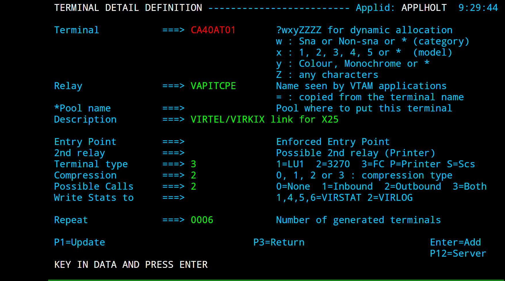
Example of entry point with last page
Virtel Macros
Introduction
Virtel macros capture keystroke operations which can subsequently be used to automate 3270 functions. These user captured macros are stored within a file called MACROS.JSON. This file is a JavaScript array of JSON objects, with each object representing a user macro. Here is an example:
{"macros":[
{"name":"mylogon","rev":2,"def":[
{"txt":"HLQ"},"ENTER",
{"txt":"myPassword"},"ENTER","ENTER","ENTER"
],
"mapping":{"key":"ctrl","keycode":76}
},
{"name":"logoff","rev":1,"def":[
{"txt":"=x"},"ENTER",
{"txt":"logoff"},"ENTER"
],
"mapping":{"key":"ctrl","keycode":79}
},
{"name":"logon","rev":2,"def":[
"Tab","Down",
{"txt":"sptholx"},"ENTER",
{"txt":"password"},"ENTER","ENTER","ENTER"
],
"mapping":{"key":"alt","keycode":76}
}
],"fmt":2}
Macro modes
Local Macro mode
All user macros are objects within a file called MACROS.JSON and with suitable knowledge this file can be maintained locally, known as local mode. The MACROS.JSON file is maintained through either the local macro interface, as launched by the user from the Virtel Tool Bar, or can be imported from a flat file where the MACROS.JSON file can be edited outside of these interfaces but this is not recommended unless you understand the macro structure and are familiar with JavaScript. By default Virtel maintains macros in local mode with the contents of the MACROS.JSON file being stored in the browsers local storage.
User Interface
Macro functions
You can capture and list macros by using the two macro ICON functions displayed in the Virtel Tool Bar. These are the red record/stop button and the green triangular play/display button. Green indicates local mode and will display the macros held in local storage.

The local storage record and play/display macro buttons
The record function is an on/off button that will record key strokes. When recording, the ICON will flash until it is clicked at which point it will stop recording and save the key strokes. A save panel will be displayed asking for the name of the macro entry. Note that an ENTER/PFK key must be pressed at least once, i.e. data must be sent by some key operation in order to create and save an entry within the macro.JSON file.
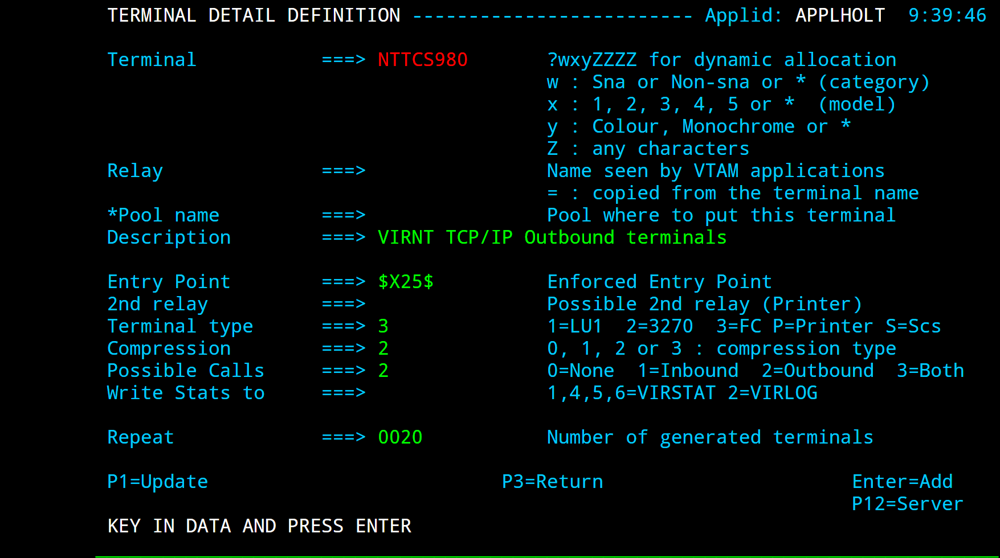
Creating a new macro
Keyboard mapping
When saving the macro you have the option of assigning a “hot key” or shortcut to the macro through keyboard mapping. Keyboard mapping can be a combination of ALT or CTRL keys and another keyboard key (F1 thru F12, A thru to Z, 1 thru 9). Beware that some keyboard combinations may be reserved for the operating system or Virtel functions. For example, CTRL-R is a browser refresh option. Allocating this combination as a hotkey will only invoke the refresh option and not the Virtel macro. Keyboard mapping is a feature that is turned on through a parameter in the w2hparm.js file. By default, keyboard mapping is set to false. To turn on keyboard mapping specify the following in the w2hparm.js member:
w2hparm.keymapping=true
With keyboard mapping enabled the macro interface will display the associated key mapping against the macro.

Saving a macro with keyboard mapping
Settings for macros
Although local macros will work “out of the box” most users would probably want to have the key mapping option set. To use this function the global options parameters must be customized to add the w2hparm.keymapping=true to the w2hparm options file. The following instructions can be used as an example as to how to set up global w2hparm customization for the CLI port 41002. Create the following two JavaScript members and upload them to the CLI-DIR directory:
var w2hparm = {
"global-settings":{
"pathToW2hparm":"../option/w2hparm.global.js",
}
};
w2hparm.js
- ::
w2hparm.keymapping=true;
w2hparm.global.js
These setup will use the customized w2hparms for CLI from the member w2hparms.global.js. The keymapping property has been set to true.
The Display Record/Play Buttons
The green triangular button will display the local storage macros. From here a context menu can be opened against each macro using the mouse right click. This will provide delete, edit, save as and run functions.

Displaying the local macros
Export and Import Options
Macros can be exported or imported using the Export and Import buttons. On export, the MACROS.JSON file will be created. If you plan to migrate to using the DDI option you will need to export the macros and then upload the relevant MACROS.JSON file through the DDI interface.
centralized Macros - DDI mode
The MACROS.JSON file can be automatically downloaded from a centralized repository on the host through the Virtel Dynamic Directory Interface (DDI). This is known as remote or DDI mode. The browser’s local storage is synchronized, via a date stamp, with the centralized VSAM repository. Management of the centralized repository is through the DDI GUI interface accessed and managed by the Virtel Administrator within the Administration Portal, normally located via port 41001. In DDI mode the macro definitions are initially initialized through an imported MACROS.JSON file. The actual centralized repository normally resides within the HTMLTRSF VSAM file made up of user, group and global directories.
The advantage of maintaining macros in a central repository is that the administrator has control over the business logic defined by the macros and can also control who has access to them through Group, Global and User profiles. As part of their Virtel interface a user can now only access site controlled macros. Each user has access to three distinct levels of a macro - User, Group and global. A user’s user and group level are assigned based upon their corresponding security subsystem security profiles whereas all macros are available at the global level. A user can maintain macros at their user level.
Note
To use centralized DDI mode users have a userid and group defined within a security subsystem such as RACF.
Implementation
To use Centralized Macros users and Administrators must have “READ” access to the relevant DDI security resources. All transactions that use DDI must be defined with at least Security=1 (Basic Security) in order that the security context can be established for the user. Stop Virtel and run the following JCL to create these resources:
//STEP0 EXEC PGM=IKJEFT01,DYNAMNBR=20 COND=ONLY
//SYSTSPRT DD SYSOUT=*
//SYSTSIN DD *
/*-------------------------------------------------------*/
/* Directory Access */
/*-------------------------------------------------------*/
RDEF FACILITY SPVIREH.GLB-DIR UACC(NONE) /* Global Dir. */
PE SPVIREH.GLB-DIR CL(FACILITY) RESET
PE SPVIREH.GLB-DIR CL(FACILITY) ACC(READ) ID(SPGPTECH)
RDEF FACILITY SPVIREH.GRP-DIR UACC(NONE) /* Group Dir. */
PE SPVIREH.GRP-DIR CL(FACILITY) RESET
PE SPVIREH.GRP-DIR CL(FACILITY) ACC(READ) ID(SPGPTECH)
RDEF FACILITY SPVIREH.USR-DIR UACC(NONE) /* Global Dir. */
PE SPVIREH.USR-DIR CL(FACILITY) RESET
PE SPVIREH.USR-DIR CL(FACILITY) ACC(READ) ID(SPGPTECH)
/*-------------------------------------------------------*/
/* DDI / Capability */
/*-------------------------------------------------------*/
RDEF FACILITY SPVIREH.W2H-07 UACC(NONE) /* DDI */
PE SPVIREH.W2H-07 CL(FACILITY) RESET
PE SPVIREH.W2H-07 CL(FACILITY) ACC(READ) ID(SPGPTECH)
RDEF FACILITY SPVIREH.W2H-66 UACC(NONE) /* DDI */
PE SPVIREH.W2H-66 CL(FACILITY) RESET
PE SPVIREH.W2H-66 CL(FACILITY) ACC(READ) ID(SPGPTECH)
/*-------------------------------------------------------*/
/* Administrators Upload */
/*-------------------------------------------------------*/
RDEF FACILITY SPVIREH.W2H-80A UACC(NONE) /* Global Dir. */
PE SPVIREH.W2H-80A CL(FACILITY) RESET
PE SPVIREH.W2H-80A CL(FACILITY) ACC(READ) ID(SPGPTECH)
RDEF FACILITY SPVIREH.W2H-80G UACC(NONE) /* Global Dir. */
PE SPVIREH.W2H-80G CL(FACILITY) RESET
PE SPVIREH.W2H-80G CL(FACILITY) ACC(READ) ID(SPGPTECH)
RDEF FACILITY SPVIREH.W2H-80U UACC(NONE) /* Global Dir. */
PE SPVIREH.W2H-80U CL(FACILITY) RESET
PE SPVIREH.W2H-80U CL(FACILITY) ACC(READ) ID(SPGPTECH)
Security Resources required for DDI
Additional Virtel transactions and directories are required to support DDI. These can be implemented by running the ARBOLOAD job, located in the Virtel CNTL library, with VMACROS=YES. After executing this job start Virtel and access the Drag and Drop GUI from the Administration Portal on 41001. You should now see additional GRP-DIR, GLB-DIR and USR-DIR directories.

DDI Directories
Once the DDI directories are set up will can configure the necessary settings to invoke DDI. A w2hParm.global.js object is uploaded to the CLI_DIR and will contain the the DDI settings. We also need to ensure that our global-settings object is defined in the wh2parm.js member. The w2hparm.js in CLI-DIR looks like this:
// NOTE: this file is a sample and will be replaced after a new install.
// please see the documentation on possible parameter values
// and on how to set this file up in CLI-DIR instead of W2H-DIR
//
//var w2hparm = {};
var w2hparm = {
"global-settings":{
"pathToW2hparm":"../option/w2hparm.global.js"
}
};
Sample w2hparm.js setting
Our w2hparm.global.js member looks like the following example. This too is also uploaded to the CLI-DIR:
// w2hparm.global.js (CLI-DIR)
// w2h parameters to override defaults and add DDI macro support.
var w2hparm = {"ctrl":"Newline",
"enter":"ENTER",
"pgup":"PA1",
"pgdn":"PA2",
"useVirtelMacros":{"macrosAutoRefresh":"session"}
};
w2hparm.keymapping=true;
The “useVirtelMacros” is the key property required for DDI. The various values for this key name control the synchronisation between the user’s local macro storage and the DDI central repository. Specify one of the following options:
"w2hparm.useVirtelMacros":{“macrosAutoRefresh”: “never” | “once” | “daily” | “session” }
Macro Options
Option |
Description |
|---|---|
Never |
Do not synchronize with DDI unless the user presses the refresh button. Default |
Once |
Synchronize with DDI only when local storage hasn’t been initialized |
Daily |
Once a Day |
Session |
Every time a new browser session is opened |
Two other settings that can be used with DDI are: -
w2hparm.keymapping=true | false Turn on keymapping
This option turns on the ability to assign a macro with a shortcut or “hot key” made up of a combination of keys; such as ALT+F1, or CTRL+A. Beware that some keyboard combinations may be reserved for the operating system or other Virtel functions. For example, CTRL-R is a browser refresh option.
w2hparm.synchronizeVirtelMacros=true | false Synchronize all centralized Repositories
If you are running multiple images of Virtel, say in a SYSPLEX arrangement using separate centralized repositories then the “synchronizeVirtelMacros” option should be set to true. This ensures that macro changes are reflected in all DDI repositories and associated local storage.
centralized DDI validation
After uploading the settings objects stop and restart Virtel and then open a TSO or CICS session through the client port 41002.
http://192.168.170.48:41002/w2h/WEB2AJAX.htm+TSO
The macro ICON should now be blue, indicating centralized DDI has been correctly configured. In local mode this ICON is green.
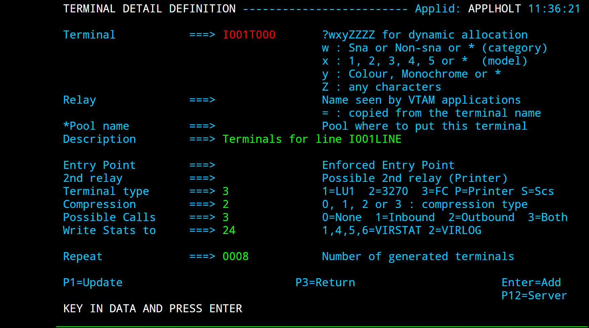
Centralized DDI is active - ICON is blue
Pressing the Blue ICON should display an empty macro list:
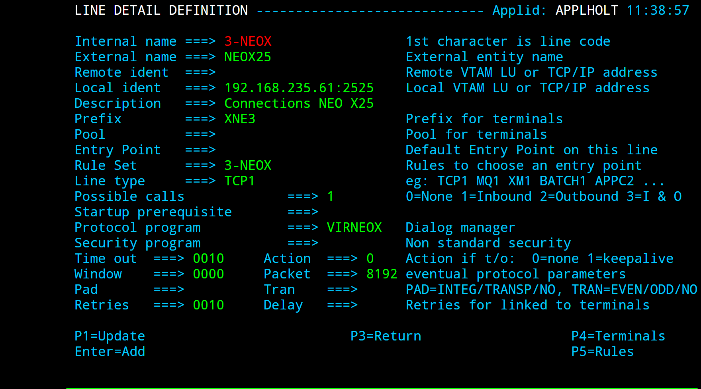
Empty Macro list
Configuring the centralized Repository
To configure the centralized DDI repository we need to create an “initial” MACROS.JSON file. If we load up a TSO or CICS transaction on the W2H line (41001) we can see that the Macro ICON is green, its running in local mode, which is what we would also expect as centralized macros are not active on this port. We will use this line to create some initial macros to load up into our centralized repository on the mainframe. Remember that in centralized DDI mode, macros are downloaded from the repository. Users do not have any capability of “writing” or exporting their own macros up to the repository. This is administered by the Virtel administrator.
http://192.168.170.48:41001/w2h/WEB2AJAX.htm+Tso

Accessing a local macro facility - Green ICON
Creating an initial macro
SDSF test macro
In the next section we will create a macro, which performs a basic SDSF task in TSO, export it and then import it into the USR-DIR directory through the centralized DDI import facility. We will use the non-DDI macro feature on port 41001 to create a test macro using the macro record button. The macro will be called SDSF. The following key sequences where entered from the ISPF primary option menu after logging on to TSO on line 41001:
Logon to TSO and bring up the ISPF primary menu panel.
Press Virtel macro record button [To the left of the green ICON]
=S Short cut to SDSF (This will be site dependant]
LOG SDSF Log command
Press Virtel macro record button again to cease recording.
The following panel should now pop up:

Creating a MACROS.JSON file
Saved the macro with the name SDSF. Now, press the Green ICON. The macro should appear in the local list and would have been saved to local browser storage. To run the macro press the green arrow to the left of the macro name SDSF.
Next, we need to create a “MACROS.JSON” file by exporting the SDSF macro we have just created.
Uploading macros to the centralized repository
To upload any MACROS.JSON file to the centralized repository we must first create a “local” export version. In the “Local Macros” popup export the SDSF macro using the export option. This will create a local “macros.json” file. The “MACROS.JSON” file will be exported to your default “download” directory on your PC.
If you view the file the following will be displayed:
{"macros":[
{"name":"SDSF","rev":1,"def":[61,115,"ENTER",108,111,103,"ENTER"]}
],
"fmt":2}
We now have a macro which we can import to the centralized repository. From the Administration portal, select the Dynamic Directory Interface option:

This will open the Dynamic directories main panel. Select the Global tab. The Global Drag and Drop area will be displayed. Drag the MACROS.JSON file from the “downloads” folder on to the Global D&D upload zone delineated by a dotted line. The MACROS.JSON file will be uploaded to the GLOBAL-DIR. The upload results will be shown on the D&D zone area.

Global DDI Upload
Refresh the GLOBAL directory by clicking the broken circled arrow in the top left of the screen. The MACROS.JSON file will be displayed. We can validate the Global macro upload by opening a TSO or CICS session with the DDI configured line (41002). Press the “Blue” ICON to display all available macros. It should now show that the SDSF macro has indeed been imported to the GLOBAL area.
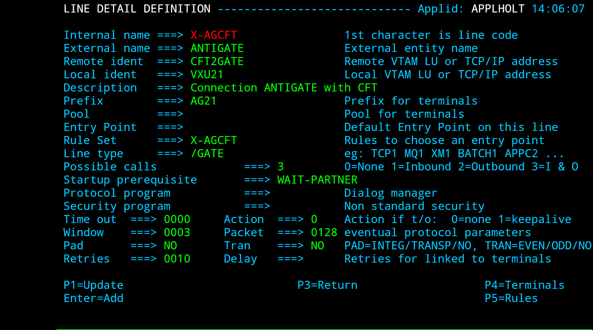
Uploaded Global Macro
To run the macro, enter the ISPF primary menu and then press the Green “ARROW” next to the SDSF name. The SDSF log display should appear.
Creating a user macro
With centralized macros, users can create “local” macros which will by synchronized with the centralized repository. They will not have the ability to import/export any macro. Creating a “user” macro follows the same process as before. The user clicks the “record” button, records their macro, stops recording by pressing the record button again. As before, a popup window will open allowing the user to name the macro and associate with a “keyboard mapping” if that option has been set. The macro will then appear in the users list of macros.
Here is an example of a user macro called “CUSTINQ” which drives a sequence of CICS keyboard sequences to display a customer Inquiry panel within a CICS transaction. The macro has been associated with key mapping “ALT+6”.

Macro Options
Pressing the “right click” button against the macro name will reveal a small popup which provides the user with some options.

The user has the ability to “DELETE”, RENAME (“Save As”), EDIT or RUN the macro. Whatever changes are made will be synchronized with the central repository.
Note
The “Edit” feature is for viewing only.
Directory and Macro Administration
Users do not have the ability to create macros. This function is performed by the Virtel Administrator. The Administrator would develop macros using a “local” facility and export these up into the central repository to make them available to users at a Global, Group and User level.
Making a user’s DDI macro available to a DDI Group
The following procedure describes how to move a user’s DDI macro to a DDI GROUP level. Start by opening the DDI interface from the main Administration Portal and select the USER tab;specify the userid in the user name field. Press the Green tick. The macros associated with the userid will be listed.

Moving macros to a Group
Select the MACROS.JSON file. This file contains all the macros associated with this userid. Right click to reveal the options available - Valid options are EDIT, DOWNLOAD or DELETE. Note, the “COPY” option cannot be used to move MACRO.JSON files to another directory, such as GRP-DIR. To move the macro to GRP-DIR the MACRO.JSON must be downloaded and then uploaded, through the DDI upload interface, to the target group DDI zone.
Select the “DOWNLOAD” tab. The MACROS.JSON will be downloaded to the default download directory.
Now, select the GROUP TAB and specify the target RACF GROUP name. Press the GREEN tick. The GROUP directory for the group name will be displayed in a delineated DDI zone area. Select the MACROS.JSON file from the default download directory, or another directory where you might have a customised MACROS.JSON file, and drag it into the zone area, delineated by a row of dots. The macro will be uploaded to the selected GROUP.
If you now go to the TSO session under port 41002, the centralized DDI line, and list the macros by pressing the Blue ICON, you should see that the Group Macros now contains a list of macros. In our example it should be the macro CUSTINQ.

Populated Group macro
From this display you can see that the User Macro CUSTINQ has been moved to the Group area. The CUSTINQ macro can now be delete the user’s MACROS.JSON list using the DDI interface. To do this, enter the Administration Portal DDI interface, select the USERTAB, enter the userid into the username, press the Green tick to list the user’s MACROS.JSON file. Select the MACROS.JSON file, right click and press the DELETE tab. Confirm the deletion. The user’s MACRO.JSON fill will be deleted from the DDI USR-DIR directory and will no longer appear in the User macros list when listing the macros in the TSO session.
Note
Press the Refresh button after “deleting” the user macro.
 Deleting macros from user’s list
Deleting macros from user’s list
The process of moving macros between the various DDI levels, USER, GROUP and GLOBAL, can be applied using the procedure described above. You must “download” and then “upload” using the DDI drag and drop interface to move macros between levels. Also, remember that all macros are associated with a JSON file – MACROS.JSON. One such file will exist for each USER, GROUP and there will be only one global MARCOS.JSON file available to all users.
It is not recommended that you EDIT a downloaded MACROS.JSON file unless you have an understanding of JavaScript and JSON objects. It is better the use the online “EDIT” functions associated with the DDI interface or that of the Macro display list. Right click either against the MACROS.JSON file or the individual Macros listed in the TSO session will bring up the Editor function.
Dummy Macro File
It is not necessary to export a “dummy” macro from a “local mode” setup to get started. You can start with a dummy MACROS.JSON file and upload it to User, Group and Global levels. From there you can build up your MACROS.JSON files and upload them to the relevant User, Group and Global zones. A dummy macro file looks like:
{"macros":[],"fmt":2}
Dummy MACROS.JSON file
Centralized DDI Troubleshooting
Out of Sync condition or no transaction security
If the Virtel cache is out of sync with the DDI/macro settings or you are trying to access DDI macros using a non-secure transaction i.e. TRANSACTION SECURITY=0 then following page can appear when pressing the macro ICON:-

Out of Sync. Problem
Solution
Make sure you are using a transaction with security set.
Refresh the cache with the following commands.
CTRL-SHIFT-DEL CTRL R
Macro formats and Commands
The format of the MACROS.JSON file is an embedded JSON structure. Each name structure represents a keystroke macro identified by the “name” keyword.
Name : The name of the macro entry.
Rev : The “rev” is a user revision keyword.
Def : The “def” keyword identifies the commands and entry values.
The macro editor supports the following commands:- * “any string of characters to input into 3270 screen” * move(pos) * copy(startRow,startCol,endRow,endCol) * paste(pos) * paste(pos,nbRows,nbCols) * key(keyIdentifier)
Macro example
{"macros":[
{
"name":"SDSFLOG",
"rev":2,
"def":["move(435)","ENTER",{"txt":"=M"},"ErEof","ENTER",{"txt":"6"},"ENTER"]
},
{
"name":"SDSFDA",
"rev":1,
"def":[77,"ENTER",53,"ENTER",100,97,"ENTER"]
}
],"fmt":1}
See Appendix A - Virtel MAcro Quick Reference Sheet for further details on macro formats, commands, identifies and built in functions.
centralized User Parameters
Centralized USERPARM provides the ability to save user settings in a centralized VSAM file on the mainframe. The user settings with be synchronized with the browser whenever a user logs on, regardless of the device they are using. Users must have a RACF or equivalent userid.
USERPARM Setup
1 Stop Virtel. Update the TCT with the following definitions and re-assemble using the ASMTCT JCL found in the CNTL library.
UPARMS=(USERPARM), * UFILE3=(USERTRSF,ACBH3,0,10,01), * ACBH3 ACB AM=VSAM,DDNAME=USERTRSF,MACRF=(SEQ,DIR,OUT), * STRNO=3
2 Run HLQ.VIRTxxx.SAMPLIB(USERPARM)
You will need to modify the JCL before running the Job. This job will allocate the USERTRSF VSAM file which will be the repository for user parameters.
3 Update RACF to support the USERPARM transactions
The following security definitions will be needed to support the USERPARM feature. For example, for RACF the following FACILITY profile definitions need to be added and users given READ access.
//STEP1 EXEC PGM=IKJEFT01,DYNAMNBR=20 //SYSTSPRT DD SYSOUT=* //SYSTSIN DD * RDEF FACILITY VIRTEL.USERPARM UACC(NONE) /* DIRECTORY */ PE VIRTEL.USERPARM CL(FACILITY) RESET PE VIRTEL.USERPARM CL(FACILITY) ACC(READ) ID(SPGPTECH) RDEF FACILITY VIRTEL.W2H-74 UACC(NONE) /* UPLOAD */ PE VIRTEL.W2H-74 CL(FACILITY) RESET PE VIRTEL.W2H-74 CL(FACILITY) ACC(READ) ID(SPGPTECH) SETR REFRESH RACLIST(FACILITY)
4 Update the VIRTEL procedure
Add the USERTRSF JCL statement to the Virtel procedure. For example :
//USERTRSF DD DSN=&QUAL..USER.TRSF,DISP=SHRRestart Virtel
5 Perform a USERPARM sanity check
A ‘sanity check’ template is provided to validate the USERPARM environment at the transaction level. For example:-
http://192.168.170.48:41002/w2h/checkCentralizedSettings.htm+TSOIf every has been configured correctly you should get a “GREEN” light.
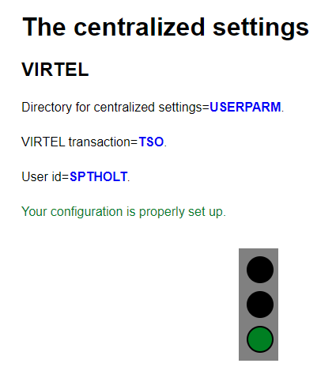
Example of a Sanity Check after setting up USERPARM
Testing the USERPARM feature
To test the USERPARM feature follow the procedure below :-
1 Logon to a 3270 application, say TSO 2 Open the settings dialog 3 Change the “Display Style” to Grey and save. The background colour should change to grey. 4 Disconnect from Virtel using the Red button in the Tool Bar. 5 Reconnect to Virtel, using a different browser and open a 3270 session. 6 The background colour should still be set to grey. 7 Open the settings dialogue and confirm that Grey button is still highlighted.
In the Virtel log you should see the following “upload” message:-
VIRU122I CLVTA079 FILE UPLOAD : ENTRY POINT 'CLIWHOST' DIRECTORY 'USERP 882
ARM' USER 'HLQ '
FILE : '8393DD4A16F0E1C9723F9D9CFA2C39F1'
Removing a user’s settings
This can be done by deleting the key associated with the user from the USERPARM directory. For example, the key associated with HLQ is C6D24022819C599803A86BB3C42298B6. If we look at USERPARM directory in the Administration portal on line 41001 we can see it listed:

Listing the USERPARM directory
We can remove the entry by using the delete option. This will remove any user settings. The user will then have to “restore defaults” to correctly pickup up the default user parameters as defined by the Administrator.
USERPARM Problems
When I try to save my settings, I get the following dialog box and the following messages in the Virtel log.
VIRU122I CLVTA079 FILE UPLOAD : ENTRY POINT 'CLIWHOST' DIRECTORY 'USERP
330
ARM' USER 'HLQ '
FILE : '9346CCEF695D8FF2D7C1B2DA6C81CFC8'
VIRC121E PAGE NOT FOUND FOR CLVTA079 ENTRY POINT 'CLIWHOST' DIRECTORY '
331
W2H '(W2H-DIR W2H-KEY )
PAGE : 'VPLEX=UNDEFINEDPARAMETERS-CODE.TXT' URL : '/w2h/VPLEX=un
definedPARAMETERS-CODE.txt++AjaxSession=ADvzWAAAAAAeu

Userparm Error
Solution
Apply the latest maintenance. You must be at UPDT5708 or higher.
Problem
I save my user parameter changes but when I use a different PC or browser I am reverted back to my old or default settings.
Solution
Check the Virtel log and look for any RACF violations that may be preventing a user from uploading their user parameters definitions to the mainframe repository. In the console log you may well see RACF error messages:
ICH408I USER(CTKHOLT ) GROUP(CTKGROUP) NAME(ED HOLT ) 451
SPVIREH.USERPARM CL(FACILITY)
INSUFFICIENT ACCESS AUTHORITY
ACCESS INTENT(READ ) ACCESS ALLOWED(NONE )
VIRU121E CLVTA079 FILE UPLOAD FAILED : ENTRY POINT 'CLIWHOST' DIRECTORY
452
'USERPARM' USER 'HLQ '
FILE : 'C6D24022819C599803A86BB3C42298B6'
Solution
Check the correct RACF security is in place.
Problem
Changed defaults not updated in another browser session.
Solution
This is normally related to configuration. Try the “sanity” URL test to make sure that the setup is correct for the line in use.
Security
How To Activate SSL AT-TLS
To provide secure HTTP (https) sessions to client browsers, VIRTEL uses the Application Transparent Transport Layer Security (AT-TLS) feature of z/OS Communication Server. AT-TLS is included with z/OS V1R7 and later releases. AT-TLS allows socket applications to access encrypted sessions by invoking system SSL within the transport layer of the TCP/IP stack. The Policy Agent decides which connections are to use AT-TLS, and provides system SSL configuration for those connections. The application continues to send and receive clear text over the socket, but data sent over the network is protected by system SSL. The supported protocols are TLS, SSLv3, and SSLv2.
Installation steps
Install Policy Agent procedure
If you do not already have the Communications Server Policy Agent (PAGENT) active in your z/OS system, copy the cataloged procedure EZAPAGSP from TCPIP.SEZAINST into your proclib, renaming it as PAGENT.
Create the Policy Agent configuration file
If you do not already run the Policy Agent, you will need to create a configuration file /etc/pagent.conf using z/OS Unix System Services. If you already run Policy Agent, you will need to find the existing configuration file and add the TTLS definitions to it. Step PCONFIG in the SSLSETUP sample job contains a starter configuration. The following changes should be made:
Replace %virtjob% by the name of your VIRTEL started task (SSLSETUP line 70)
Replace 41000-41002 by 41002 in the LocalPortRange parameter (SSLSETUP line 71) to activate AT-TLS for VIRTEL line C-HTTP
Replace ServerWithClientAuth by Server in the HandshakeRole parameter (SSLSETUP line 82) as we will not be using Client Certificates.
Allow the Policy Agent to run during TCP/IP initialization
The Policy Agent must be given READ access to the resource EZB.INITSTACK.* in RACF class SERVAUTH. See step EZBAUTH in the SSLSETUP sample job (delivered in VIRTEL SAMPLIB).
Create the server certificate
A server certificate for VIRTEL must be created, signed by a certificate authority, and stored in the RACF database. In the SSLSETUP sample job we create a signing certificate and use RACF itself as the certificate authority. Alternatively, you may use an external certificate authority such as Verisign to create and sign the certificate, then import it into RACF. At SSLSETUP line 228, replace %virtssl% by the DNS name assigned to the VIRTEL host (for example, virtssl.syspertec.com)
Add the certificate to the keyring
The server certificate must be added to the VIRTRING keyring. See step CCERTIF in the SSLSETUP sample job.
Allow VIRTEL to access its own certificate
To allow VIRTEL to access its own keyring and server certificate, the VIRTEL started task must have READ access to the resource IRR.DIGTCERT.LISTRING in the RACF class FACILITY. See step IRRAUTH in the SSLSETUP sample job.
TCPIP Definitions for AT-TLS
To activate AT-TLS, add the following statements to TCPIP PROFILE:
TCPCONFIG TTLS
AUTOLOG 5 PAGENT ENDAUTOLOG
Stop and restart TCP/IP to activate the TCPCONFIG TTLS profile statement. The AUTOLOG statement will cause the PAGENT procedure to be started automatically during TCP/IP initialization.
Operations
Starting the Policy Agent
The AUTOLOG statement in the TCP/IP profile will start the PAGENT procedure automatically at TCP/IP initialization. Alternatively you can issue the MVS command S PAGENT. Note: if this is the first time you have activated the SERVAUTH class, you are likely to see RACF failure messages during TCP/IP initialization indicating that other applications are unable to access the resource EZB.INITSTACK. This is normal, because Communications Server uses this mechanism to prevent applications from accessing TCP/IP before the Policy Agent is started. Do not be tempted to authorize applications to use this RACF resource. Either ignore the messages (they will go away once PAGENT has started), or ensure that PAGENT starts before all other applications.
Altering the Policy Agent configuration
To make changes to the Policy Agent configuration file, either edit and resubmit the PCONFIG step of the SSLSETUP sample job, or use the TSO ISHELL command to edit the file /etc/pagent.conf directly from ISPF. After you make changes to the Policy Agent configuration, use the MVS command F PAGENT,REFRESH to force PAGENT to reread the file.
Logon to VIRTEL using secure session
To access VIRTEL line C-HTTP you must now use URL https://n.n.n.n:41002 instead of http://n.n.n.n:41002 (where n.n.n.n is the IP address of the z/OS host running VIRTEL).
Problem determination
Policy Agent log file
Policy Agent startup messages are written to the /tmp/pagent.log file of z/OS Unix System Services. You can use the TSO ISHELL command to browse this file from ISPF.
Common error messages
Error messages relating to session setup are written to the MVS SYSLOG. The most common error message is:
EZD1287I TTLS Error RC: nnn event
where nnn represents a return code. Return codes under 5000 are generated by System SSL and are defined in the System SSL Programming manual. Return codes over 5000 are generated by AT-TLS and are defined in the IP Diagnosis Guide. Some commonly encountered return codes are:
7 No certificate
8 Certificate not trusted
109 No certification authority certificates
202 Keyring does not exist
401 Certificate expired or not yet valid
402 or 412 Client and server cannot agree on cipher suite
416 VIRTEL does not have permission to list the keyring
431 Certificate is revoked
434 Certificate key not compatible with cipher suite
435 Certificate authority unknown
5003 Browser sent clear text (http instead of https)
Cipher suite
The client and server cipher specifications must contain at least one value in common. The TTLSEnvironmentAdvancedParms parameter of the Policy Agent configuration file allows you to turn on or off the SSLv2, SSLv3, and TLSv1 protocols at the server end. The list of supported cipher suites for each protocol is in the TTLSCipherParms parameter. Check the /tmp/pagent.log file to determine whether any cipher suites were discarded at startup time. In Microsoft Internet Explorer, follow the menu Tools – Internet Options – Advanced. Under the security heading there are three options which allow you to enable or disable the SSL 2.0, SSL 3.0, and TLS 1.0 protocols. You cannot enable or disable individual cipher suites. In Firefox the cipher specifications are accessed by typing about:config in the address bar and typing security in the filter box. By default, ssl2 is disabled, and ssl3 and tls are enabled. By default, all weak encryption cipher suites are disabled, and 128-bit or higher cipher suites are enabled.
Bibliography
SA22-7683-07 z/OS V1R7 Security Server: RACF Security Administrator’s Guide Chapter 21. RACF and Digital Certificates
SC24-5901-04 z/OS V1R6 Cryptographic Services: System SSL Programming Chapter 12. Messages and Codes
SC31-8775-07 z/OS V1R7 Communications Server: IP Configuration Guide Chapter 14. Policy-based networking Chapter 18. Application Transparent Transport Layer Security (AT-TLS) data protection
SC31-8776-08 z/OS V1R7 Communications Server: IP Configuration Reference Chapter 21. Policy Agent and policy applications
GC31-8782-06 z/OS V1R7 Communications Server: IP Diagnosis Guide Chapter 28. Diagnosing Application Transparent Transport Layer Security (AT-TLS)
SC31-8784-05 z/OS V1R7 Communications Server: IP Messages: Volume 2 (EZB, EZD) Chapter 10. EZD1xxxx messages
SSL - Signing On Using Server And Client Certificates
In this section we look at setting up Virtel to work with client and user certificates and to effectively remove the need for a user to provide a user id and password. This is equivalent to the Express Logon Feature (ELF) provided by Host on Demand and other Telnet clients. First, let’s review what is going on behind the scenes with certificate authentication and X.509 certificate validation within TLS/SSL. The guiding principle here is that Public Key Infrastructure (PKI) requires that data encrypted with a public key can only be decrypted with a private key and data encrypted with a private key can only be decrypted with a public key. The secure session (https) that runs between the browser and Virtel uses the Application Transparent Transport Layer Security feature of z/OS Communications Server, also known as AT-TLS. AT-TLS allows socket applications to access encrypted sessions by invoking Secure Socket Layer (SSL) within the transport layer of the TCP/IP stack. A policy agent (PAGENT) is used to configure AT-TLS using parameter statements which will determine which sessions are to use AT-TLS. AT_TLS inserts itself in the connection between the application and browser. This means that the application will send and receive clear text over the socket interface, but data over the network is encrypted by system SSL. System SSL has three supported protocol levels:
TLSv1
SSLv2
SSLv3
In this configuration we will be using SSLv3. The server / client process, which in Virtel’s case is the Virtel started task (server) and the browser (client), implements the following SSL protocol or handshake during the “hello” phase of establishing a secure session:
The Client contacts the Server ;
The Server sends a certificate;
Server authentication is performed by the Client ;
Client sends the certificate;
Client authentication is performed by the Server ;
An encryption algorithm and single key is chosen to encrypt / decrypt data The purpose of the authentication is to ensure that the server/client are in fact who they say they are. This is to ensure that they server/client private and public keys haven’t been stolen and are purporting to be an entity that they aren’t and thereby compromising security. Authentication uses X.509 digital certificates. Further details of this handshake and the certificate exchange can be found in Appendix B. TLS/SSL Security z/OS Communications Server: IP Configuration Guide.
What is a Certificates
X.509 certificate?
Amongst other things it includes the Distinguished Name of the Server (DNS), the public key of the Server, Distinguished Name of the Server organization issuing the certificate and the issuer’s signature. If we look at a certificate held with RACF we can see this information. Certificates are identified by a combination of LABEL, USERID or Certification Authority (CA).
READY
RACDCERT ID(SPVIRSTC) LIST(LABEL('VIRTEL SSL DEMO'))
Digital certificate information for user SPVIRSTC:
Label: VIRTEL SSL DEMO
Certificate ID: 2Qji1+XJ2eLjw+XJ2ePF00Di4tNAxMXU1kBA
Status: TRUST
Start Date: 2014/07/08 00:00:00
End Date: 2015/07/08 23:59:59
Serial Number:
>05<
Issuer's Name:
>CN=z/OS Security Server.O=SYSPERTEC.C=FR<
Subject's Name:
>CN=RECETTE VIRTEL.T=VIRTEL Web Access.O=SYSPERTEC.C=FR<
Key Usage: HANDSHAKE, DATAENCRYPT
Key Type: RSA
Key Size: 1024
Private Key: YES
Ring Associations:
Ring Owner: SPVIRSTC
Ring:
>VIRTRING<
Similar details can be found in the browser settings. For example here is what Chrome displays in the HTTPS/SSL certificate database.

Types of certificates
Client certificate
Server certificate
Well-known Certificate Authority (CA) Signing certificate
RACF signing certificate
In this configuration we will be using self-signed server and client certificates. In most installation you would use server and client certificates signed by a well-known CA. These well-known CA certificates are normally available in the RACF and browser key data bases.
Configuring the certificates
The first step is to create the necessary certificates. We require a server certificate, a RACF signing certificate and a user certificate. In the Virtel SAMPLIB there is a member called SSLSETUP. This will initialize the SSL environment and create the RACF signing certificate. Some of the steps may or may not be relevant so you will need to customize SSLSETUP accordingly. For example, you might already be running the PAGENT started task and have RACF definitions in place to support the required SSL access. The following is the certificate generation statement for the RACF signing certificate.
//DCERTCA EXEC PGM=IKJEFT01
//SYSTSPRT DD SYSOUT=*
//SYSTSIN DD *
/*-----------------------------------------------------------------*/
/* Delete previous signing certificate */
/*-----------------------------------------------------------------*/
RACDCERT CERTAUTH +
DELETE(LABEL('z/OS signing certificate'))
//*----------------------------------------------------------------*
//* CCERTCA : CREATE SIGNING CERTIFICATE *
//*----------------------------------------------------------------*
//CCERTCA EXEC PGM=IKJEFT1A
//SYSTSPRT DD SYSOUT=*
//SYSTSIN DD *
/*-----------------------------------------------------------------*/
/* Create a signing certificate */
/*-----------------------------------------------------------------*/
RACDCERT CERTAUTH +
GENCERT +
WITHLABEL('z/OS signing certificate') +
SUBJECTSDN( +
CN('z/OS Security Server') +
O('SYSPERTEC') +
C('FR')) +
KEYUSAGE(CERTSIGN) SIZE(1024) +
NOTAFTER(DATE(2026-06-30))
If we list the certificate after we have created it will get the following:
READY
RACDCERT CERTAUTH LIST(LABEL('z/OS signing certificate'))
Digital certificate information for CERTAUTH:
Label: z/OS signing certificate
Certificate ID: 2QiJmZmDhZmjgalh1uJAoomHlYmVh0CDhZmjiYaJg4GjhUBA
Status: TRUST
Start Date: 2013/07/03 00:00:00
End Date: 2026/06/30 23:59:59
Serial Number:
>00<
Issuer's Name:
>CN=z/OS Security Server.O=SYSPERTEC.C=FR<
Subject's Name:
>CN=z/OS Security Server.O=SYSPERTEC.C=FR<
Key Usage: CERTSIGN <<<
Key Type: RSA
Key Size: 1024
Private Key: YES
Ring Associations:
Ring Owner: SPVIRSTC
Ring:
>VIRTRING<
The key usage identifies this certificate as a signing certificate. This certificate will be used to sign other certificates that we generate. Next is the server certificate. Again we use RACF to generate the certificate and use the RACF signing certificate to “sign” it. The following extract is from the Virtel SAMPLIB member SSLUCERT.
//CCERTIF EXEC PGM=IKJEFT1A
//SYSTSPRT DD SYSOUT=*
//SYSTSIN DD *
/*-----------------------------------------------------------------*/
/* Create a digital certificate */
/*-----------------------------------------------------------------*/
RACDCERT ID(SPVIRSTC) /* VIRTEL userid */ +
GENCERT +
WITHLABEL('VIRTEL SSL DEMO') +
SIGNWITH(CERTAUTH LABEL('z/OS signing certificate')) +
SUBJECTSDN( +
CN('RECETTE VIRTEL') +
T('VIRTEL Web Access') +
O('SYSPERTEC') +
C('FR')) +
KEYUSAGE(HANDSHAKE DATAENCRYPT) SIZE(1024)
Note how we identify the signing certificate with the SIGNWITH parameter using the same label information that we used when defining the RACF signing certificate.
Certificates and Key rings
Having generated two of our certificates we now need a place to keep them. We place the certificates on a key ring and associate the key ring with the VIRTEL server RACF user id (in our case SPVIRSTC). The member SSLSETUP has some RACF commands to perform the key ring generation. Here is an extract:
/*-----------------------------------------------------------------*/
/* Create a keyring */
/*-----------------------------------------------------------------*/
RACDCERT ID(SPVIRSTC) /* VIRTEL userid */ +
ADDRING(VIRTRING)
/*-----------------------------------------------------------------*/
/* Add the certificate to the keyring */
/*-----------------------------------------------------------------*/
RACDCERT ID(SPVIRSTC) /* VIRTEL userid */ +
CONNECT( +
ID(SPVIRSTC) +
LABEL('VIRTEL SSL DEMO') +
RING(VIRTRING) +
DEFAULT)
Again it is the label that identifies the key(certificate) that we want to add to the key ring owned by user SPVIRSTC.
User Certificate
The next step is to create a user certificate which we will export and import into our browser’s key data base. In the Virtel SAMPLIB member SSLUCERT performs the task of creating the user certificate and creating an “exportable” file.
//*----------------------------------------------------------------*
//* Associate certificate with user id *
//*----------------------------------------------------------------*
//UCERTIF EXEC PGM=IKJEFT1A
//SYSTSPRT DD SYSOUT=*
//SYSTSIN DD *
/*-----------------------------------------------------------------*/
/* Add certificate to Server ring */
/*-----------------------------------------------------------------*/
RACDCERT ID(SPVIRSTC) /* client userid */ +
CONNECT (CERTAUTH +
LABEL('z/OS signing certificate') +
RING(VIRTRING) +
USAGE(CERTAUTH))
/*-----------------------------------------------------------------*/
/* Add certificate to Server ring */
/*-----------------------------------------------------------------*/
RACDCERT ID(SPVIRSTC) /* client userid */ +
CONNECT (ID(HLQ) +
LABEL('SSL client certificate') +
RING(VIRTRING) +
USAGE(CERTAUTH))
/*-----------------------------------------------------------------*/
/* Refresh the RACF profiles */
/*-----------------------------------------------------------------*/
SETROPTS RACLIST(DIGTRING) REFRESH
SETROPTS RACLIST(DIGTCERT) REFRESH
The “CONNECT CERTAUTH” tells RACF that this is a signing CA certificate and the “CONNECT ID(HLQ) indicates that the certificate labelled ‘SSL client certificate’ is associated with USERID HLQ. This is how Virtel obtains the USERID. Also, note that we refresh the RACF profiles related to certificates and key rings. If we list our key ring for user SPVIRSTC we should have three certificates.
READY
RACDCERT ID(SPVIRSTC) LISTRING(VIRTRING)
Digital ring information for user SPVIRSTC:
Ring:
>VIRTRING<
Certificate Label Name Cert Owner USAGE DEFAULT
-------------------------------- ------------ -------- -------
VIRTEL SSL DEMO ID(SPVIRSTC) PERSONAL YES
z/OS signing certificate CERTAUTH CERTAUTH NO
SSL client certificate ID(HLQ) CERTAUTH NO
Importing the certificate on the client work station.
To import the user certificate into the client workstation the P12 file must be downloaded in binary and then the certificate import wizard is run to import the certificate.
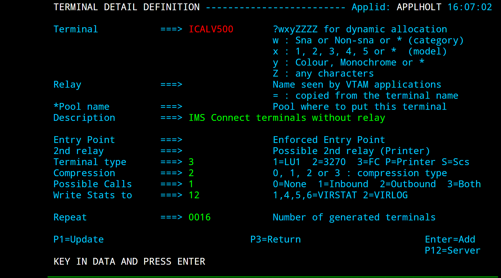
After importing the following panel is displayed:

At this stage we have completed our certificate generation. Through the use of the certificates we will be able to initiate a secure session (https) with an application and obtain a user id.
PassTicket support
The next step is to obtain a pass ticket in place of a password so that Virtel can log on to the target application and present a user id and password combination on behalf of the user. The following job will enable PassTicket support for our target application SPCICSH and using user id SPVIRSTC, out Virtel server user id. This job will have to be customized accordingly:
//STEP1 EXEC PGM=IKJEFT1A,DYNAMNBR=20
//* RDEFINE FACILITY IRR.RTICKETSERV
//SYSTSPRT DD SYSOUT=*
//SYSTSIN DD *
SETROPTS CLASSACT(APPL)
SETROPTS CLASSACT(PTKTDATA)
SETROPTS RACLIST(PTKTDATA)
SETROPTS GENERIC(PTKTDATA)
RDELETE PTKTDATA SPCICSH
RDELETE PTKTDATA IRRPTAUTH.SPCICSH.*
RDEFINE PTKTDATA IRRPTAUTH.SPCICSH.* UACC(NONE)
RDEFINE PTKTDATA SPCICSH SSIGNON(KEYMASKED(998A654FEBCDA123)) + <<<
UACC(NONE)
//STEP1 EXEC PGM=IKJEFT1A,DYNAMNBR=20
//SYSTSPRT DD SYSOUT=*
//SYSTSIN DD *
PERMIT IRR.RTICKETSERV CL(FACILITY) ID(SPVIRSTC) ACC(READ) <<<
PERMIT IRRPTAUTH.SPCICSH.* CL(PTKTDATA) ID(SPVIRSTC) ACC(UPDATE)
SETROPTS REFRESH RACLIST(PTKTDATA)
SETROPTS REFRESH RACLIST(FACILITY)
In order for Virtel to generate PassTickets, you must also modify your VIRTCT to include the parameter PASSTCK=YES and then reassemble the VIRTCT. See chapter 6 of the Virtel Installation Guide for more details on the Virtel VIRTCT.
PAGENT Configuration
To enable system SSL sessions to take place between the browser and the application we have to tell AT-TLS and SSL which sockets to intercept. This is configured in the pagent configuration file which can be found in /etc/pagent.conf. The two areas that we are interested in are the TTLSEnvironmentAction section and the TTLSRule section.
TTLSEnvironmentAction VIRTELenvir_inSec
{
HandshakeRole ServerWithClientAuth
Trace 7
TTLSKeyringParms
{
Keyring VIRTRING
}
TTLSEnvironmentAdvancedParms
{
SSLv2 On
SSLv3 On
TLSv1 On
ClientAuthType SAFCheck
}
TTLSCipherParmsRef VIRTELcipher
}
....
TTLSRule VIRTELrule_in_eh
{
Jobname SPVIREH
LocalPortRange 41002
Direction Inbound
TTLSGroupActionRef VIRTELgroup
TTLSEnvironmentActionRef VIRTELenvir_inSec
}
The TTLS Rule identifies Virtel Started task name via the Jobname parameter and also the port number that can support secured sessions _ https. In this case it is port 41002.
The rules section also identifies the environmental section. In this case we have selected an environment section called VIRTELenvir_insec.
In VIRTELenvir_insec we identify that we want to use both server and client certificates:
HandShakeRole ServerWithClientAuth
That the user certificate must be associated with a valid RACF userid:
ClientAuthType SAFCheck
The name of the keyring that holds the keys(certificates):
Keyring VIRTRING
A default pagent.conf is shipped with the SAMPLIB member SSLSETUP which you can use to modify accordingly to define the above SSL sections. To refresh a pagent.conf profile after you have made changes you can issue the following z/OS command:
F PAGENT,REFRESH
Configuring Virtel - CICS Example
The final part in our configuration is to configure Virtel to use SSL to obtain the user id and PassTicket support to create a password. We configure Virtel in the transaction associated with our target application, in this case the CICS application called SPCICSH.

Note that PassTicket is set to 2. This will enable Virtel to generate a temporary password. Security is set to 3. This indicates that Virtel will receive a USERID based upon the user certificate used in the authentication process. The TIOA at logon is a string that will logon to the CICS application using the user id and password values that Virtel has obtained.
With this configuration we can logon to our CICS application without the user presenting any user id or password. This is very much like the Express Logon Facility implemented in our Telnet clients.
Logon Example
In the following screen shots we demonstrate logging into a CICS application via a secure session (https) without specifying any user id/password. Our initial URL is https://192.168.170.30:41002/w2h/WEB2AJAX.htm+CICS; you will replace the IP address with your own installation IP address or domain name.

We are presented with a « Select a certificate » window from the browser requesting the certificate we wish to user for authenication purposes. We select the certificate we downloaded. The next panel is a warning panel which identifies that the certificate we are using has not been authenticated by a well-known CA authority. We are of course aware of this as we are using a RACF self signed certificate.

We select Advanced and are then presented with information about the certificate.

We select the “Proceed” link.

We are signed into CICS without having to specify any user id or password.
AT-TLS Problems
It is easy to miss something when configuring user certificate sign on. Here are some general guidelines that should help in debugging configuration errors.
Is AT-TLS active.
Issue the following z/OS command – D TCPIP,,N,TTLS
The response should be :
EZD0101I NETSTAT CS V1R13 TCPIP 706
TTLSGRPACTION GROUP ID CONNS
VIRTELGROUP 00000002 3
1 OF 1 RECORDS DISPLAYED
END OF THE REPORT
- 2 PAGENT return codes.
Common session startup/handshake errors are reported through messqge EZD1287I. In the example below we can see that the handshake has failed with a return code of 5003. Return codes under 5000 are generated by System SSL and are defined in the System SSL Programming manual. Return codes over 5000 are generated by AT-TLS and are defined in the IP Diagnosis Guide. In the following the 5013 suggests that the browser has sent clear text; in other words, http was used instead of https in the URL.
BPXF024I (TCPIP) Oct 7 13:33:08 TTLS 83951769 : 15:33:08 TCPIP 367
EZD1281I TTLS Map CONNID: 000006A2 LOCAL: 192.168.170.30..41002
REMOTE: 192.168.92.62..57545 JOBNAME: SPVIREH USERID: SPVIRSTC TYPE:
InBound STATUS: Enabled RULE: VIRTELrule_in_eh ACTIONS: VIRTELgroup
VIRTELenvir_inSec **N/A**
BPXF024I (TCPIP) Oct 7 13:33:08 TTLS 83951769 : 15:33:08 TCPIP 368
EZD1286I TTLS Error GRPID: 00000002 ENVID: 00000000 CONNID: 000006A2
LOCAL: 192.168.170.30..41002
REMOTE: 192.168.92.62..57545
JOBNAME: SPVIREH USERID: SPVIRSTC
RULE: VIRTELrule_in_eh
RC: 5003 Data Decryption EZD1287I TTLS Error RC: 5003 Data Decryption 369 <<<<
LOCAL: 192.168.170.30..41002
REMOTE: 192.168.92.62..57545
JOBNAME: SPVIREH RULE:
VIRTELrule_in_eh USERID:
SPVIRSTC GRPID: 00000002
ENVID: 00000000
CONNID: 000006A2
- Common PAGENT return codes:
7 No certificate
8 Certificate not trusted
109 No certification authority certificates
202 Keyring does not exist
401 Certificate expired or not yet valid
402 or 412 Client and server cannot agree on cipher suite
416 VIRTEL does not have permission to list the keyring
431 Certificate is revoked
434 Certificate key not compatible with cipher suite
435 Certificate authority unknown
5003 Browser sent clear text (http instead of https)
5006 SSL failed to initialize. Check RACF SSLSETUP job.
For 5003, make sure your url is HTTPS and not HTTP.
For 5006, list the Virtel key ring and ensure all the relevant keys are attached. There should be a client certificate (if using client certificates), a server certificate and an associated signing certificate.
3 Virtel messages
VIRHT57E LINE IS NOT SET UP FOR HTTPS
This means that the browser has sent encrypted text (https) but that AT-TLS has not decrypted it before sending it to VIRTEL. The PAGENT rules haven’t correctly identified this port as a SSL jobname/port. Check the /etc/pagent.conf member. The message is a bit misleading as there is no line setup required by Virtel.
Normally AT-TLS is transparent to VIRTEL. AT-TLS performs the decryption and transforms the https request into an http request before passing it to VIRTEL. The only case where VIRTEL is AT-TLS aware is when the VIRTEL transaction definition specifies SECURITY=3 (TLS) and in this case VIRTEL will check that the session has been processed by AT-TLS and will issue an IOCTL to obtain the userid associated with the certificate.
In the normal case, you should specify HandshakeRole Server, ClientAuthType Full, and ApplicationControlled Off in the AT-TLS rules, as in the example in VIRT447.SAMPLIB(SSLSETUP). VIRTEL does not issue an IOCTL to turn decryption on and off, so if you specified ApplicationControlled On then you would get VIRHT57E because AT-TLS has not been instructed to start decryption.
If you still get an error when you have ApplicationControlled Off then we will need to see the SYSLOG (for the EZD TTLS messages), the JESMSGLG from the VIRTEL started task, and the SYSPRINT resulting from a z/OS command F VIRTEL,SNAP immediately after the error occurs. We would also like to see the exact URL which was entered at the browser, as well as the AT-TLS pagent.conf file.
References
z/OS IBM References
SA22-7683-07 z/OS V1R7 Security Server: RACF Security Administrator’s Guide Chapter 21. RACF and Digital Certificates
SC24-5901-04 z/OS V1R6 Cryptographic Services: System SSL Programming Chapter 12. Messages and Codes
SC31-8775-07 z/OS V1R7 Communications Server: IP Configuration Guide Chapter 14. Policy-based networking Chapter 18. Application Transparent Transport Layer Security (AT-TLS) data protection
SC31-8776-08 z/OS V1R7 Communications Server: IP Configuration Reference Chapter 21. Policy Agent and policy applications
GC31-8782-06 z/OS V1R7 Communications Server: IP Diagnosis Guide Chapter 28. Diagnosing Application Transparent Transport Layer Security (AT-TLS)
SC31-8784-05 z/OS V1R7 Communications Server: IP Messages: Volume 2 (EZB, EZD) Chapter 10. EZD1xxxx messages
Virtel References
VIRTEL Installation Guide PASSTCK parameter
VIRTEL Connectivity Reference Transactions – PassTicket Parameter / Transactions – Security Parameter
VIRTEL Web Access Guide Security – Data encryption by SSL
NTLM Support
Windows Integrated Authentication allows a users’ Active Directory credentials to pass through their browser to a web server. The NTLM support is automatically activated whenever the Virtel transaction invoked is defined with type 2 security (NTLM). The NTLM support allows to retrieve the Windows userid but NOT the associated password. It could be therefore appropriate to complete the signon process by obtaining a password using a PASSTICKET request. Windows Integrated Authentication is enabled by default for Internet Explorer but not necessarily for Google Chrome or Mozilla Firefox. Users who use the non-Microsoft browsers will receive a pop-up box to enter their Mainframe credentials before continuing to the Virtel Web Access website. In an effort to make this process as easy as possible for end-users and if the Mainframe and Active Directory userid are the same it could be efficient to enable Windows Integrated Authentication for the browser. This can be done with Chrome and Firefox with a few additional steps.
Enable Windows Integrated Authentication for Internet Explorer
For Internet Explorer 11
Open Internet Explorer and select “Tools” Pull-down menu,
Select the “Internet Option” line,
In the opened Pop Up window, select the “Advanced” tab,
Scroll down to the “Security” section until you see “Enable Integrated Windows Authentication”. Select the box next to this field to enable,
Select the “Security” tab,
Select the “Local Intranet Area”,
Add the web server address (DNS or IP address) to the list.
Enable Windows Integrated Authentication for Google Chrome
The latest version of Chrome uses existing Internet Explorer settings, but older version require additional configurations (see below). You can use three methods to enable Chrome to use Windows Integrated Authentication.Your options are the command line, editing the registry, or using ADMX templates through group policy. If you choose to use the command line or edit the registry, you could use Group Policy Preferences to distribute those changes on a broader scale. Each of these three methods achieve the same results for configuring Google Chrome for Windows Integrated Authentication. Below are the steps for the three methods:
To use the command line to configure Google Chrome.
Start Chrome with the following command:
Chrome.exe –auth-server-whitelist=”MyVirtel.Domain.Name”
–auth-negotiate-delegatewhitelist=”MyVirtel.Domain.Name”
–auth-schemes=”digest,ntlm,negotiate”
To modify the registry to configure Google Chrome
Configure the following registry settings with the corresponding values:
Registry AuthSchemes
Data type: String (REG_SZ)
Windows registry location: SoftwarePoliciesGoogleChromeAuthSchemes
Mac/Linux preference name: AuthSchemes
Supported on: Google Chrome (Linux, Mac, Windows) since version 9
Supported features: Dynamic Policy Refresh: No, Per Profile: No
Description: Specifies which HTTP Authentication schemes are supported by Google Chrome. Possible values are ‘basic’, ‘digest’, ‘ntlm’ and ‘negotiate’. Separate multiple values with commas. If this policy is left not set, all four schemes will be used.
Value: “basic,digest,ntlm,negotiate”
AuthServerWhitelist
Data type: String (REG_SZ)
Windows registry location: SoftwarePoliciesGoogleChromeAuthServerWhitelist
Mac/Linux preference name: AuthServerWhitelist
Supported on: Google Chrome (Linux, Mac, Windows) since version 9
Supported features: Dynamic Policy Refresh: No, Per Profile: No
Description: Specifies which servers should be whitelisted for integrated authentication. Integrated authentication is only enabled when Google Chrome receives an authentication challenge from a proxy or from a server which is in this permitted list. Separate multiple server names with commas. Wildcards (*) are allowed. If you leave this policy not set Chrome will try to detect if a server is on the Intranet and only then will it respond to IWA requests. If a server is detected as Internet then IWA requests from it will be ignored by Chrome.
Value: “MyVirtel.Domain.Name”
AuthNegotiateDelegateWhitelist
Data type: String (REG_SZ)
Windows registry location: SoftwarePoliciesGoogleChromeAuthNegotiateDelegateWhitelist
Mac/Linux preference name: AuthServerWhitelist
Supported on: Google Chrome (Linux, Mac, Windows) since version 9
Supported features: Dynamic Policy Refresh: No, Per Profile: No
Description: Servers that Google Chrome may delegate to. Separate multiple server names with commas. Wildcards (*) are allowed. If you leave this policy not set Chrome will not delegate user credentials even if a server is detected as Intranet.
Value: “MyVirtel.Domain.Name”
To use ADM/ADMX templates through Group Policy to configure Google Chrome:
Download Zip file of ADM/ADMX templates and documentation from: http://www.chromium.org/administrators/ policy-templates,
Add the ADMX template to your central store, if you are using a central store,
Configure a GPO with your application server DNS host name with Kerberos Delegation Server Whitelist and Authentication Server Whitelist enabled.
Enable Windows Integrated Authentication for Mozilla Firefox
Open Firefox,
In the address bar type about:config
In the opened Pop Up window, select the “Advanced” tab,
You will receive a security warning. To continue, click “I’ll be careful, I promise”,
You will see a list of preferences listed. Find the settings below by browsing through the list or searching for them in the search box. Once you have located each setting, update the value to the following:
Setting Value
network.automatic-ntlm-auth.trusted-uris MyVirtel.Domain.Name
network.automatic-ntlm-auth.allow-proxies True
network.negotiate-auth.allow-proxies True
NTLM Troubleshooting
Still receiving login prompt
If you still continue to receive logon prompt, please check your configuration. Most common error are:
The accessed server is not listed in the NTLM trusted uris section (Local Intranet Area for Internet Explorer).
The invoked Virtel transaction is not defined with security = 2.
System Management
Virtel Message Controls
By default, the system messages prefixed by VIR issued by VIRTEL and the messages issued from the scenarios are written both in the STC SYSOUT or the JOB as well as on the system console. If certain messages prefixed by VIR can be deleted using the parameter (or command line) SILENCE of the VIRTCT, it may sometimes be necessary to stop the message issuance to SYSLOG or restrict their diffusion to another direction. From Virtel 4.54 (not available until 2015/Q1) the LOG feature enables the VIRTEL log to be spun off to JES2. Setting up VIRTEL to use the LOG sysout facility requires a change to the TCT definition to direct WTOs to a SYSOUT dataset. In the TCT code the following statement:
LOG=(SYSOUT,class,destination)
For example, LOG=(SYSOUT,A,EDSPRT) directs all WTOs to a SYSOUT dataset rather than the system console log (SYSLOG). If you want WTO messages going to both the system console and a SYSOUT dataset then issue the following VIRTEL command:
F VIRTEL,LOG=BOTH
The LOG feature in Virtel 4.54 is controlled by the TCT parameters and a new LOG command. The new LOG command has the following format:
F VIRTEL,LOG=CONSOLE | SYSOUT | BOTH | SPIN Default=CONSOLE
LOG
The following parameters are available:
CONSOLE: Routes all WTO message to the system console. This is the default action.
SYSOUT : Routes all WTO messages to a VIRTEL SYSOUT dataset which is dynamically allocated.
BOTH : Routes all WTO messages to both the system console and a dynamically allocated SYSOUT dataset.
SPIN : Forces Virtel to release the current SYSOUT dataset for further processing and allocates a new SYSOUT dataset.
Virtel will direct messages to an allocated SYSOUT data set and | or the console (default). If SYSOUT processing is being used you will see a dynamically allocated dataset in the SDSF display panel named SYSnnnnn. You can spin this dataset off using the Virtel command LOG=SPIN . VIRTEL will release the SYSOUT dataset from JES2 and allocate a new one.
Once the LOG command activated, only the following messages will be displayed at the SYSLOG during startup process :
15.20.18 STC07592 VIR0096I VIRTEL IS USING VIRTCT 'VIRTCTDO'
15.20.18 STC07592 VIR0000I STARTING LICENCE SPVIRDOC-VIRTEL-A20191231 (2019 - 12 - 31)
15.20.18 STC07592 VIR0019I VIRTEL 4.57 HAS NO PTFS APPLIED
15.20.18 STC07592 VIR0089I VIRTEL RUNNING FROM AN AUTHORIZED LIBRARY
15.20.18 STC07592 VIR0860I VIRTEL IS USING RACROUTE SECURITY
15.20.18 STC07592 VIR0861I MIXED-CASE PASSWORD SUPPORT IS ACTIVE
15.20.18 STC07592 VSV0207I VIRSV V3R3 STARTED
15.20.19 STC07592 VIR0093I VTAM GENERIC RESOURCE NAME IS ABOVE
15.20.19 STC07592 VIR0024I OPENING FILE VIRARBO
15.20.19 STC07592 VIR0024I OPENING FILE VIRSWAP
15.20.19 STC07592 VIR0024I OPENING FILE VIRHTML
15.20.20 STC07592 VIR0024I OPENING FILE HTMLTRSF
15.20.20 STC07592 VIR0024I OPENING FILE SAMPTRSF
15.20.20 STC07592 VIR0024I OPENING FILE VIRHTML
15.20.20 STC07592 VIR0024I OPENING FILE CUSTRSF
15.20.20 STC07592 VIR0024I ATTACHING SUBTASKS
15.20.21 STC07592 VIR0000I THIS COPY OF VIRTEL IS FOR THE EXCLUSIVE USE OF:
15.20.21 STC07592 VIR0000I SYSPERTEC COMMUNICATION
15.20.21 STC07592 VIR0000I 196 BUREAUX DE LA COLLINE
15.20.21 STC07592 VIR0000I 92213 SAINT CLOUD CEDEX
15.20.21 STC07592 VIR0000I HTTP Date: Thu, 10 Aug 2017 13:20:21 GMT
15.20.21 STC07592 VIR0000I SMTP Date: Thu, 10 Aug 2017 14:20:21 +0100
15.20.21 STC07592 VIR0900I LICENCE SPVIRDOC-VIRTEL-A20191231 (2019 - 12 - 31)
15.20.21 STC07592 VIR0099I SPVIRDOC STARTED AT 10/08/17 14:20:21 , VERSION 4.57
The display of message VIR0099I requires the PTF 5530 be applied. Similarly the following messages will be displayed at the SYSLOG during shutdown process:
15.21.48 STC07592 VIR0009I SPVIRDOC : SHUT DOWN IN PROGRESS
15.21.48 STC07592 VIR0024I CLOSING FILE VIRARBO
15.21.49 STC07592 VIR0024I CLOSING FILE VIRSWAP
15.21.49 STC07592 VIR0024I CLOSING FILE VIRHTML
15.21.49 STC07592 VIR0024I CLOSING FILE HTMLTRSF
15.21.49 STC07592 VIR0024I CLOSING FILE SAMPTRSF
15.21.49 STC07592 VIR0024I CLOSING FILE VIRHTML
15.21.49 STC07592 VIR0024I CLOSING FILE CUSTRSF
15.21.49 STC07592 VIR0026W HTTP-CLI OPEN SESSION 00000000 - 192.168.170.046:41002
15.21.49 STC07592 VIRT922W HTTP-CLI SOCKET 00000000 ENDED FOR 192.168.170.046:41002
15.21.49 STC07592 VIR0026W HTTP-W2H OPEN SESSION 00000000 - 192.168.170.046:41001
15.21.49 STC07592 VIRT922W HTTP-W2H SOCKET 00000000 ENDED FOR 192.168.170.046:41001
15.21.49 STC07592 VIR0006I CLOSING ACBS
15.21.49 STC07592 VIR0006I DETACHING CONSOLE SUBTASK
15.21.49 STC07592 VIR0233I VIRTEL SYSOUT DATASET HAS BEEN SPUN OFF
15.21.49 STC07592 VIR0006I DETACHING LOADER SUBTASK
15.21.49 STC07592 VIR0006I DETACHING VSAM SUBTASK
15.21.49 STC07592 VIR0006I DETACHING STATISTICS SUBTASK
15.21.49 STC07592 VIR0006I CLOSING VIRSV
15.21.50 STC07592 VIR0003I SPVIRDOC ENDED
VIRCONF Usage
VIRCONF is a batch facilty you can use to add, update, delete VIRTEL definitions stored in the ARBO file. There is also an unload facility which can be invoked either in batch or dynamically through the Virtel UNLOAD command. See below.
VIRCONF does not open the ARBO for output.
If you run VIRCONF when Virtel is active you can get IEC161I error messages when performing add, update or replace options. The reason for this error is that the VIRCONF program requires exclusive control of the ARBO file. Following the performance improvements, through the introduction of VSAM LSR, VIRCONF is no longer able to access the ARBO VSAM file when VIRTEL is running. The unload option is not affected by this serialization.
Unloading the ARBO dataset
The following JCL is an example of the VIRCONF program.
//*
//* THIS JOB UNLOADS AN ARBO FILE
//*
// SET LOAD=SP000.VIRTEL.LOADLIB
// SET ARBO=SP000.VIRTEL.ARBO
//*
//DEL EXEC PGM=IEFBR14
//DDA DD DSN=&SYSUID..VIRCONF.TEST.SYSIN,DISP=(MOD,DELETE),
// UNIT=SYSDA,SPACE=(TRK,0)
//*
//UNLOAD EXEC PGM=VIRCONF,PARM=UNLOAD
//STEPLIB DD DSN=&LOAD,DISP=SHR
//SYSPRINT DD SYSOUT=*
//VIRARBO DD DSN=&ARBO,DISP=SHR,AMP=('RMODE31=NONE')
//SYSPUNCH DD DSN=&SYSUID..VIRCONF.TEST.SYSIN,DISP=(,CATLG),
// UNIT=SYSDA,VOL=SER=SPT30C,SPACE=(CYL,(5,1)),
// DCB=(RECFM=FB,LRECL=80,BLKSIZE=6080)
A dynamic UNLOAD can be run through the following Virtel command:-
F virtel,unload
This command invokes the VIRCONF program which unloads the ARBO file. The following DD statement can be added to the Virtel procedure to direct the output to a dataset:
//SYSPUNCH DD DSN=SP000.VIRTELxx.VIRCONF.SYSIN,DISP=(,CATLG),
// UNIT=SYSDA,VOL=SER=VVVVVV,SPACE=(TRK,(5,1)),
// DCB=(RECFM=FB,LRECL=80,BLKSIZE=6080)
Or alternatively, if no SYSPUNCH is found, dynamic allocation will be invoke to write the ARBO statements to JES SYSOUT=B: The following mesages will appear in the log:-
F VIRTEL,UNLOAD
VIR0200I UNLOAD
$HASP375 VIRTEL ESTIMATED CARDS EXCEEDED
VIR0223I UNLOAD ENDED
Virtel MSG10 USSTAB
This section discusses how to build and implement a VTAM USSMSG10 screen using the VIRTEL VIR0021W USSTAB menu program. Customers can take there existing VTAM USSMSG10 code and pace the assembled module in the VIRTEL DFHRPL load library. The VIR0021W program will interrogate the customers USSTAB module and create an equivalent VIRTEL 3270 MAP. The 3270 MAP will be passed to the module VIR0010 where it will be converted into a HTML template and served to the browser. The generated template will provide similar functionality to that of the VTAM USSMSG10, that being a presentation screen and support for USSCMD and USSPARM entries. This allows customers to maintain their USSTAB MSG10 presentation for both VTAM and VIRTEL users without modification. The customers assembled USSTAB module, normally found in USER.VTAMLIB or an equivalent library, must be made available to VIRTEL. This can be done by either copying the module to a VIRTEL DFHRPL library or concatenating the USER.VTAMLIB library into the VIRTEL started procedure.
Program restrictions
In most cases no changes are required but that only applies if certain caveats are met. Those being
There is only one unprotected field with an IC instruction (x’13’). The maximum length of 50 characters. This area is for command entry.
Data areas are broken up with Start Field (x’1D’) or extended Start Field (x’29’) instructions. Each area cannot be greater than 240 characters.
Displacement addresses, such as AL2(((24-1)*80)+(80-1)), are not supported. Only use 3270 Buffer addresses such as x’C1C1’, representing Columun 1 Row 1.
The following PARM fields are supported - APPLID, P1 and P12.
The SCAN parameter must be included on the Buffer statement. For example:- MSG10 USSMSG MSG=10,BUFFER=(MSG10BUF,SCAN)
Setting up to use the VIRTEL’s USSMSG support
Build a Virtel transaction
Start by defining a Virtel transaction to support the VIR0021W program and the USSMSG display.
TRANSACT ID=CLI-16A, -
NAME=VTAMUSS, -
DESC='Logon through USSTAB', -
APPL=VIR0021W, -
TYPE=2, -
TERMINAL=CLVTA, -
STARTUP=1, -
SECURITY=1, -
LOGMSG='usstab=myusstab,errmsg=y'

Example of a USSMSG transaction
Create your USSTAB load module
Check your existing USSTAB code, in particular the USSMSG10 section, and check that it meets the caveats as outlinded above. Re-assemble the code and place in the DFHRPL loadlib.
Test the USSMSG10 display
To display the USSMSG10 buffer you will need to use a VIRTEL URL that invokes the Virtel transaction. For example, http://192.168.170.48:41002/w2h/WEB2AJAX.htm+VTAMUSS. Here is the default example that is shipped with Virtel. The source can be found in the SAMPLIB library as member USSVIRT.

Default USSMSG display
You can, of course, make this transaction the default transaction for the Entry Point, so that the USSMSG display is shown whenever a user enters just the line and port. For example, http://192.168.170.48:41002. You would specify the USSMSG transaction in the TIOA at logon field in the Entry Point definition - w2h/WEB2AJAX.HTM+VTAMUSS
The errmsg= keyword
The VIR0021W program supports the errmsg=Y|N keyword. If errmsg=Y is specified in the LOGMSG it instructs the VIR0021W program to use line 24 in your display as a feedback area. Meaningful messages will be reported back to the user should the VIR0021W fail to initiate a session with the target 3270 application. This area must not be utilized by your USSMSG10 definitions i.e. your should have no data defined in line 24.
Dyanmic substitution
VIR0021W supports symbolic values within the USSMSG10 code. Any values defined in the IEASYM00 zOS parmlib member may be substituted in the USSMSG buffer. For example:-
DC CL10'&&SYSNAME.'
The &&SYSNAME would be replaced bu the systems SYSNAME. The template length must be sufficient to support the value being substituted. Apart from the values defined in the IEASYM00 parmlib member the following substition values can also be used:-
@@@@:@@@@:@@@@:@@@@:@@@@:@@@@:@@@IPADDR Callers IPV6 or IPV4 address
@@@@@@@@@IPADDR Callers IPV4 Address
@@PORT PORT
@@LUNAME Virtel LU Name
@@@@DATE Date
@@@@TIME Time
Problems
Should your user USSATAB fail to load , or breaks one of the caveats listed above the the default USSTAB USSVIRT will be loaded. This default module can be overridden by specifying USSTAB=name in the TCT. You could provide a USSMSG10 help page directing users to a contact number, for example. If the default page is shown, check the VIRTEL log for error messages. Normally when the user USSTAB module fails an error message is written to the VIRTEL log.
Msg VIR0060W MAPFAIL WAS DETECTED ON TERMINAL TTTTTTTT
The USSTAB input area conflicts with the Virtel MAP that supports the USSTAB application processing. Check that none of the constraints listed above above have been broken. In particular the defined input area is no larger than 50 characters, that there is only one input area, and that data within protected fields does not exceed 240 characters.
cAppMenu Customization
Default Virtel Application Menu design

Default Virtel Application Menu
The New Virtel Tier Menu Style
The application user list displayed after logon is dynamically linked to their security profile, i.e.; RACF, ACF2, or TSS authorizations. Virtel administrators can organize the application list in collapsible (>) expandable (+) sections. All levels are displayed in expanded form, at first logon. Users can collapse levels containing less used applications, therefore highlighting focus on frequently used applications.

cAppMenu Application Tier Menu
Customizing the appmenu.[key name].js JavaScript
Key Values Criteria Types
The Key values for the Tier Level display are triggered by any of the following criteria, as documented in the appmenu.client.js script:
status;
tran;
application;
description
The application contains 4 columes of data :-
1 Key="status"
2 Key="tran"
3 Key="application"
4 Key="description"
Each key can be taken as a criteria for a level selection
Virtel cAppMenu Tier Menu description
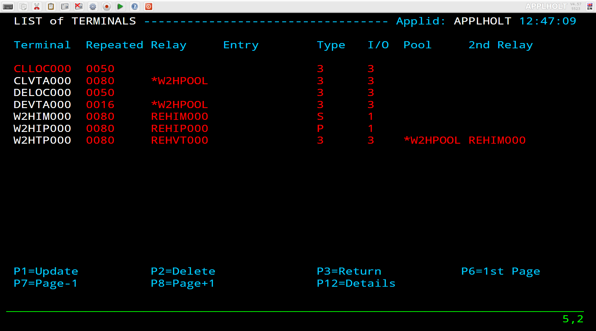
Modify the Main and Sub titles
var cAppMenuOptions = {
"close_VWA_when_disconnects":true
}
cAppMenuOptions["texts"] = {
"main-title":"Virtel Application Tier Menu",
"sub-title":"Syspertec Virtel V4.61 Application Menu",
};
Setup Level 0, first level of the Tier menu - CICS Production Regions
Level 0 is setup as CICS Productions Regions. Using KEY tran so all defined transactions with an External name of cicsp anywhere in the transaction name; the /i means any case.

cAppMenuOptions["levels"] = []
// First group - CICS Production - criteria: the VIRTEL transaction name that contains “CICSP"
cAppMenuOptions["levels"][0] = {
"title":"CICS Production Regions",
"criteria" : "tran",
"regexp" : /cicsp/i
};
Setup Level 1 of the Tier menu - CICS Development Regions
Level 1 defined as CICS Development Regions. Using KEY tran so all defined transactions with an External name of cicsd anywhere in the transaction name, the /i means any case

// Second group - CICS development - criteria : the VIRTEL transaction name starts with "CICSD"
cAppMenuOptions["levels"][1] = {
"title":"CICS Development Regions",
"criteria" : "tran",
"regexp" : /cicsd/i
};
Note
Repeat the above code for each required level. See the sample appmenu.sample.js at the end of this section.
Setup Final Level as Other Applications if Required
The final Level, level 6, would be a catch all, called Other Applications. In this Tier any application that did not match the previous criteria will be displayed here. This level can also be used simply as a list of Generic Applications, or merely as a temporary level to show remaining applications that need to be added to a previously defined level. Note that there is no “criteria” or “regexp” properties.
// Other Applications - criteria : the VIRTEL transaction names not in any previous levels"
cAppMenuOptions["levels"][6] = {
"title":"Other Sessions"
};
Customizing the CSS custCSS.[key name].css style sheet
Add company logo to the Virtel cAppMenu Tier Menu Syspertec group

Create a Cascading Style sheet using the following code with a .jpeg or .png file containing the company logo. Use the Chrome debugger tool to help determine the proper logo size. This example also adds the Company Logo to the Toolbar.
*
* VIRTEL Web Access style sheet customisation for company logo
* (c)Copyright SysperTec Communication 2012 All Rights Reserved
*
*/
div.App-logo {
width: 326px;
height: 57px;
background-image: url("syspertec.png");
background-size: 200px 50px;
height:50px;
width:200px;
background-size: 100%;
}
Create an option.[key name].js file
Modify the following file, change [key name] to your company name. This value [key name] will be used in step “Update the Required Virtel Transactions”
// $Id: option.level3.js 4809 2018-10-10 14:38:13Z riou $
var oCustom={
"pathToJsCustom":"../../option/appmenu.[key name].js",
"pathToCssCustom" : "../option/custCSS.[key name].css"
}
Create a Company Logo file
Download a company logo that will look best on the cAppMenu application Menu, save the image as a .JPEG or .PNG.

Update the required Virtel Transactions
CLI-90
Update the CLI-90 Applist Transaction to invoke the customization by adding an option field with your [key name], for example level3. In the example below the value CLIENT has been used as the option.

CLI-00
Modify the default Entry Point transaction CLI-00 and update the TIOA at logon fiedl to call cAppMenu.htm
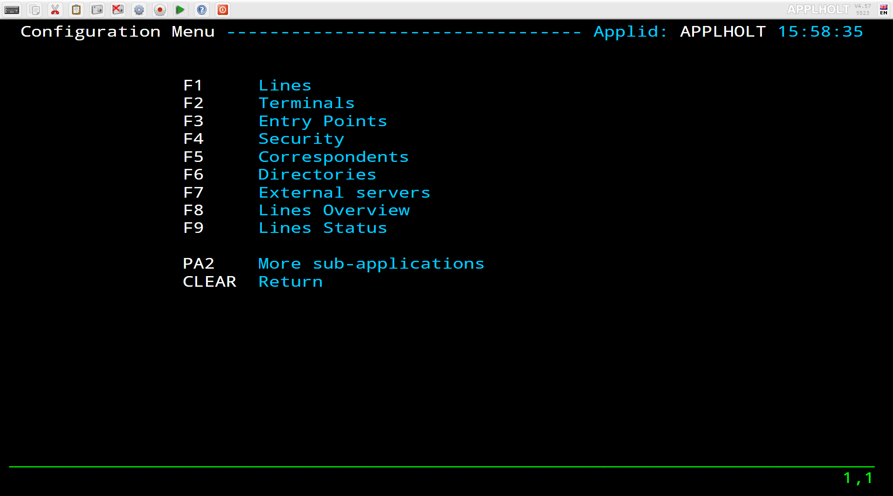
Update the CLI-DIR directoy
Using the Virtel Drag and Drop feature upload the customized files to the CLI-DIR.
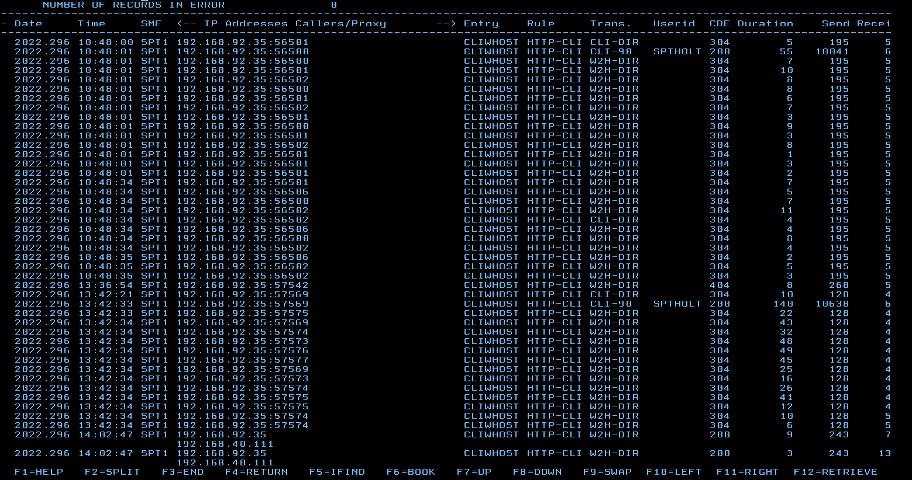
From the Administration Panel, select the customized files and Drop & Drag them into the CLI-DIR.
Note
Refresh the browser cache after uploading and reconnect to the Application Menu to see the results.
PFK key assignment
PFK’s can be assigned to transactions within the CappMenu display as shortcuts.
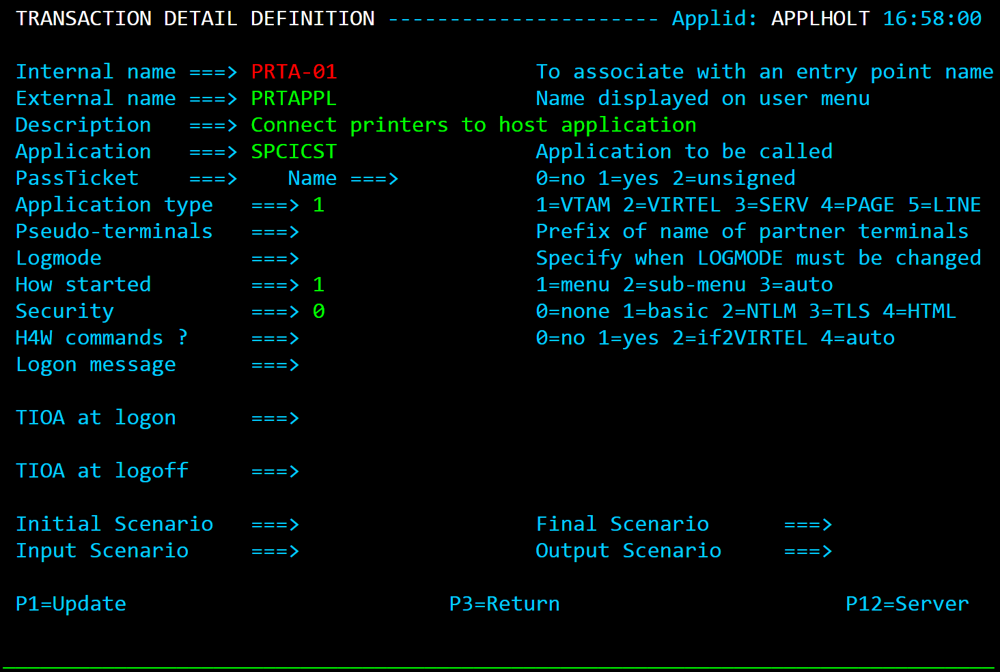
The pf2tran array needs to be added to the cAppmenOptions array. The following is an example.
// Titles with PFKs
cAppMenuOptions = {
"texts": {
"main-title": "Virtel Demo Application Tier Menu Session Manager",
"sub-title": "SYSPERTEC Virtel V4.61 Application Menu"
},
// mapping of the pf keys connected to VIRTEL transactions
"pf2tran": [
{ "pf" : "PF 2" , "tran" : "CICSP1" },
{ "pf" : "PF 10" , "tran" : "CICST1" },
{ "pf" : "PF 12" , "tran" : "TSOP1" },
{ "pf" : "PF 9" , "tran" : "TSOT1" },
{ "pf" : "PF 4" , "tran" : "TSOT2" }
]
}
PassThru Security
The CappMenu has a feature which allows security information to be passed through to the application rather than presenting the user with the transaction Virtel HTML sigon panel. This passthru feature is triggered by specifying the “passOnIdentification” option.
var cAppMenuOptions = {
"passOnIdentification": true,
"close_VWA_when_disconnects": true
}
Virtel Language Support
Introduction
VIRTEL Web Access v4.59 and above supports a variety of SBDC and DBCS code pages. To support DBCS the Entry Point must have EXTCOLOR=X set.
Chinese
Add IBM1388 into the CHARSET parameter list in the VIRTCT and the use the WEB2AJAC.HTM page instead of the (default) WEB2AJAX.HTM in the URL. See the Technical newsletter 2015/17 Virtel Chinese Character Language Support. TCT example follows: -
DEFUTF8=IBM1388, DEFAULT OUTPUT ENCODING * CHARSET=(IBM1388, CHINESE SIMPLIFIED * IBM1047, US OPEN SYSTEMS * IBM933A, KOREAN * IBM0037, US EBCDIC * IBM1390,IBM1399), JAPANESE *
Thai
The Thai character set is implement using the following TCT options : -
A W2H parm option also needs to be set. “w2hparm.leftalignpage” should be set to true. This value can also be set in the Miscellaneous options tab. This will allow left alignment of the W2H page. This may be useful when no monospace font is available (e.g. for Thailand).
Arabic
The Alt-ENTER key is used to globally switch the screen display from ‘left to right’ to ‘right to left’ and return. In this way Arabic 3270 is supported. Alternate.Enter Mirror mode option needs to be set in the w2hparm defaults and Bi-Direction screen write.
Note
the Alt-ENTER is active only if the ‘Bidirectional data’ Display option is set.
the Alt-ENTER key may be unset by going to w2h key mappings options.
w2hparm.mirrorMode may be set in a w2hparm.js file to preset the option (e.g. for user screens defaulting to arabic) use w2hparm.mirrorMode = true
When the ‘Bidirectional Data’ option is active, the Alt+Shift key combination toggles data entry to/from Right-to-Left. This may be disturbing in contexts other than Hebrew, e.g. in Tunisia, where this key combination is used to switch keyboards. This option can be disabled by setting the w2hparm.altshift = no. See the Key Mapping option in the Alt modifiers section.
altshift = “RTLinput” is the default, altshift = “no” may be specified.
Contact Sysypertec support for more information on setting the correct w2hparm options to support Arabic.
Virtel FTP Client
Introduction
VIRTEL Web Access v4.59 and above supports a FTP file transfer interface through the use of FTP command templates and the local FTP client. The Virtel FTP package consists of the following elements:
One or more templates that Virtel uses to generate FTP parameters. These can be configured by the Virtel administrator.
A Virtel scenario that generates the FTP parameter file, when the function is called via a button on the toolbar of from an option on the Virtel administration menu.
A Windows desktop script that invokes the local FTP client and passes through the FTP commands generated by Virtel.
How does it work?
Virtel runs in a browser and, for security reasons, cannot directly call the local FTP client program. Other than through the use of IND$FILE, Virtel does not provide direct FTP connection to the mainframe. The Virtel FTP package centralizes the FTP file transfer parameters, where they can be configured by the Virtel Administrator. When an end-user requests for an FTP transfer to be initiated, an FTP parameter file is downloaded to the browser default download directory. The file transfer can then be executed by calling a batch script on the user’s desktop, that will use the parameter file as an input.
Pre-requisites
The user workstation must be able to run Microsoft’s ftp.exe program.
The user must be authorized to run batch (BAT) and Power shell scripts
The Virtel Entry point(s) must be defined to load scenarios from the SCE-DIR directory. This is normally the default.
A directory to keep the ancillary programs should be created on the users PC. This could be something like c:virtelftp. See Appendix A for me details on the ancillary post processing programs.
Installing and configuring the FTP function
Download and apply the Virtel 4.59 UPDT5799 update from the Virtel FTP website. This should apply they latest maintenance to Virtel which includes the FTP feature.
Stop Virtel.
Add the following Virtel transactions: -
//INIARBO EXEC PGM=VIRCONF,PARM=LOAD
//STEPLIB DD DISP=SHR,DSN=VIRTEL.LOADLIB
//SYSPRINT DD SYSOUT=*
//VIRARBO DD DISP=SHR,DSN=VIRTEL.ARBO
//SYSIN DD *
TRANSACT ID=W2H-04E, -
NAME=FTPPARM, -
DESC='FTPPARM ', -
APPL=$NONE$, -
TYPE=2, -
TERMINAL=DELOC, -
STARTUP=2, -
SECURITY=0, -
TIOASTA=&/S, -
EXITSTA=FTPPARM
TRANSACT ID=CLI-04E, -
NAME=FTPPARM, -
DESC='FTPPARM ', -
APPL=$NONE$, -
TYPE=2, -
TERMINAL=CLLOC, -
STARTUP=2, -
SECURITY=0, -
TIOASTA=&/S, -
EXITSTA=FTPPARM
The new transactions will provide the support for the FTP feature. The external/internal must be called FTPPARM. The transactions update both the administration entry point (W2H) and the client entry point (CLI).
FTP transaction definition for FTP file transfer
FTP Scenario
The FTPPARM scenario, FTPPARM.390, can be found in the SCE directory. By default, the W2H entry point WEB2HOST, uses SCE-DIR as its directory for scenarios. However, for backward compatibility, the default for the client entry point CLI, CLIWHOST, doesn’t use SCE-DIR by default. It still loads scenarios from the Virtel LOADLIB. The scenario source FTPPARM can be found in the SAMPLIB datatset. Users can assemble it and place it in the VIRTEL LOADLIB update the CLI entry point must be update to locate scenarios through the SCE-DIR. Alternatively, you could use a RULE | Entry Point combination or define anothe VIRTEL LINE for FTP support, pointing the associated entry point at SCE-DIR.
Defining the FTP templates
Templates reside in the related directory, for eample W2H-DIR, CLI-DIR, or a user directory. The FTP package provides default templates for Upload and Download FTP requests. These can be customized to your site specifications and then re-uploaded to the W2H-DIR directory.
For example: sendipnw.txt. (Send new file to target with IP address)
<!--VIRTEL start="{{{" end="}}}" -->OPEN {{{CURRENT-VALUE-OF "IPDSN"}}}
USER {{{CURRENT-VALUE-OF "USERFTP"}}}
? <==== Optional Password Trigger!
{{{CURRENT-VALUE-OF "TYPFTP"}}}
quote site blksize={{{CURRENT-VALUE-OF "BSZFTP"}}} lrecl={{{CURRENT-VALUE-OF "LRLFTP"}}} recfm={{{CURRENT-VALUE-OF "RFMFTP"}}}
{{{CURRENT-VALUE-OF "SPCFTP"}}} pri={{{CURRENT-VALUE-OF "PRIFTP"}}} sec={{{CURRENT-VALUE-OF "SECFTP"}}}
PUT {{{CURRENT-VALUE-OF "LOCALFILEFTP"}}} {{{CURRENT-VALUE-OF "REMOTEFILEFTP"}}}
QUIT
The third line of the template defines the optional user password character. If it is set to “?”, then the user will be prompted for a password when running the background FTP script PSVirtelFtp.ps1.
Template Variables
The following variables can be used in the FTP templates:
{{{CURRENT-VALUE-OF "USERFTP"}}} = Screen field « Userid »
{{{CURRENT-VALUE-OF "TYPFTP"}}} = Screen field « text or Binary », value « ASCII » or « TYPE I »
{{{CURRENT-VALUE-OF "TYPCHS"}}} = Screen field « Charset »
{{{CURRENT-VALUE-OF "REMOTEFILEFTP"}}} = Grouped Screen field of «Path: » and « File : » of Section « Host File »
{{{CURRENT-VALUE-OF "LOCALFILEFTP"}}} = Grouped Screen field «Path: » and « File : » of Section « PC File »
{{{CURRENT-VALUE-OF "IPDSN"}}} = Screen field « IUP/DNS »
{{{CURRENT-VALUE-OF "BSZFTP"}}} = Screen field « Blksize»
{{{CURRENT-VALUE-OF "LRLFTP"}}} = Screen field « Lrecl»
{{{CURRENT-VALUE-OF "RFMFTP"}}} = Screen field « Recfm»
{{{CURRENT-VALUE-OF "SPCFTP"}}} = Screen field « Space»
{{{CURRENT-VALUE-OF "PRIFTP"}}} = Screen field « Pri»
{{{CURRENT-VALUE-OF "SECFTP"}}} = Screen field « Sec»
Defining the FTP templates for the action listbox
Modify the supplied JavaScript file “dataftplist.js” source to populate the “Action” list box with your personal templates. Upload to your Virtel directory.
// $Id: dataftplist.js ???? 2019-10-15 09:01:46 lepi $
var FTPLIST = new Array();
var alink = new Array();
alink["ftpvalue"] = "send";
alink["host"] = "T";
alink["ftpmsg"] = "Send ip 192.168.92.161";
FTPLIST[0] = alink;
var alink = new Array();
alink["ftpvalue"] = "sendip";
alink["host"] = "T";
alink["ftpmsg"] = "Send ip Target";
FTPLIST[1] = alink;
Activate the Toolbar icons for file transfer
A new icon for FTP package will displayed on the VIRTEL Web Access toolbar via a setting in the user parameter settings dialog. When the settings Option “Show the toggle button for VirtelFtp” is checked, a blue FTP icon will appear, as shown below:

VIRTEL Web Access toolbar for FTP file transfer
Installing the bat files, shortcut and ancillary programs
Within the SAMPTRSF directory the will be a zip file virtelFTP.zip. Download and unzip this to a directory on your workstation, for example c:VirtelFtp. To download enter the following URL
192.168.170.48:41001/PUBLIC/virtelftp.zip
A “Save As” dialog box will open. Select a directory where you can save the file. Once unziped you will find a virtelFTP directory which contains the following:-
documentation
A software directory containing four files
These four files are used to initiate the FTP file transfer and maintain the FTP profiles in local browser storage.
1. Downloadftp.bat
rem Test Batch FTP script.
:: $Id: downloadftp.bat 5228 2019-12-03 13:57:05Z riou $
::Script Batch de transfert ftp.exe avec fichier FTPPARAM.TXT
@echo off
set dateLog=%date:~6,4%%date:~3,2%%date:~0,2%
set h=%TIME:~0,2%
set m=%TIME:~3,2%
set s=%TIME:~6,2%
set timeLog=%h%_%m%_%s%
REM Launch FTP and pass it the script
ftp -n -s:%HOMEDRIVE%%HomePath%\Downloads\FTPPARAM.txt >%HOMEDRIVE%%HomePath%\Downloads\Log_Ftp_%dateLog%_%timeLog%.log
REM Delete params
rem del %HOMEDRIVE%%HomePath%\Downloads\FTPPARAM.txt
2. VirtelFtp.ps1
Ancillary Power Shell script.
3. VirtelFtp.vbs
Ancillary Visual Basic program.
4. PSVirtelFtp.bat
Initial Bat file which triggers the FTP process. It should be defined as a short-cut on the desktop. It will process the FTPPARM.TXT file that has been created in the users “Download” directory. This file contains all the details of the FTP request built from the Virtel FTP screens. The file is used by the ancillary programs to initiate and perform the FTP operation.
PSVirtelFtp.bat kicks off a power shell script VirtelFtp.ps1.
echo off
move %USERPROFILE%\Downloads\ftpparam.txt c:\virtel\ftp
start /W /B powershell -file VirtelFtp.ps1 %1
rem del %USERPROFILE%\Downloads\ftpparam.txt
Set up a shortcut on your desktop
For ease of operation set up a shortcut on your directory, pointing to the .bat file in c:virtelftp. Once the FTP parameters have been built by Virtel FTP, clicking this shortcut will invoke the FTP file transfer.
How to use the Virtel FTP function
Sending and Receiving a file
To send a file from your workstation to a target FTP site, click the FTP icon on the Virtel toolbar. The “VIRTEL FTP” dialog will open:
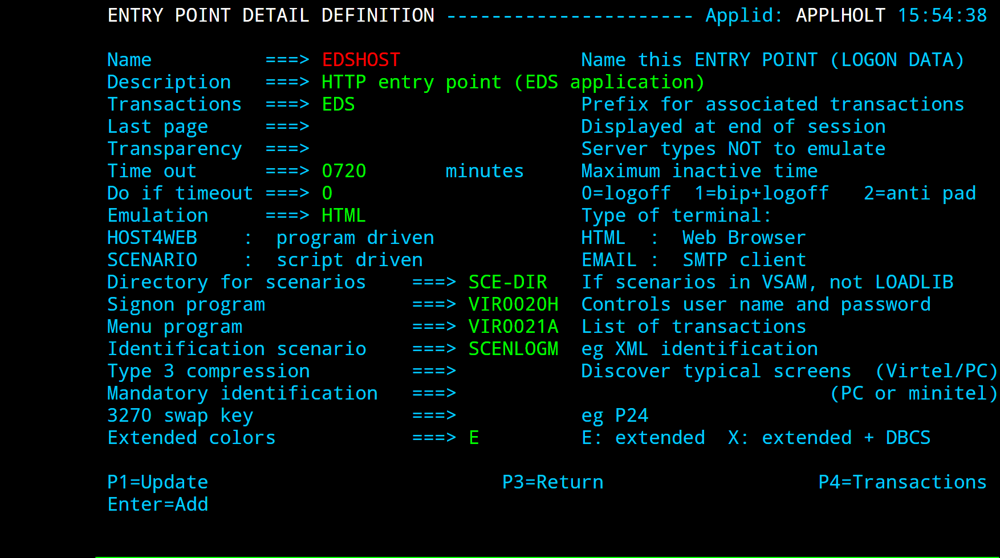
VIRTEL FTP Dialog Part 1
* Select « Send ip Target » in the action list box.
* Specify the Username to be used for the FTP connection.
* In Section “PC File”
* Specify the Local Path if necessary.
* Specify the PC file name. You can also specify the pathname here or -
* Drag And Drop a file onto the “Drag files from your directory path to here! » zone. This will populate the filename field.
* Specify the Charset to be used for the FTP transfer. The default is Windows CP-1252
* In Section “Host File”
* Specify the Path (equal TSO dataset name or TSO PDS), surrounded by quotes if necessary. Dataset names without quotes will be prefixed by your TSO prefix (usually your userid).
* Specify the File (equal TSO dataset name).
* In sub-Section “FTP Options” in the “Host File” section
* Choose either “Text” or “Binary”. “Text” translates the file from EBCDIC to ASCII and inserts carriage return line feed sequences (x’0D0A’) at the end of each record. “Binary” performs no translation.
* In sub-Section “Host” in “Host File”
* Select the target host type (TSO/UNIX/JES2) associated with the "Transfer Type" action. This will modify the actions to the selected type.
* Finally click “Build” to generate the FTP parameter file.
When the Generate Parameter is complete, the browser’s “VIRTEL FTP Save Parameter” dialog appears:
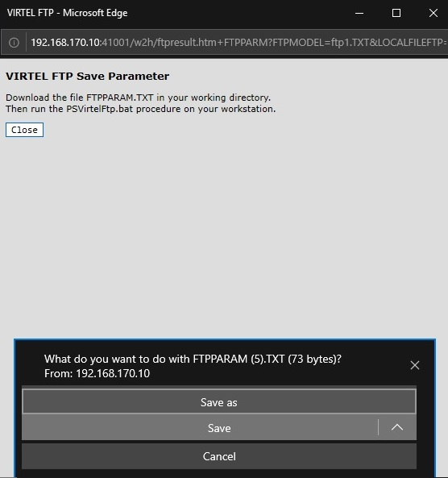
VIRTEL FTP Dialog Part 2
Click “Save”. The “Save As” dialog will open to allow you to specify the name and location of the destination file on your workstation:
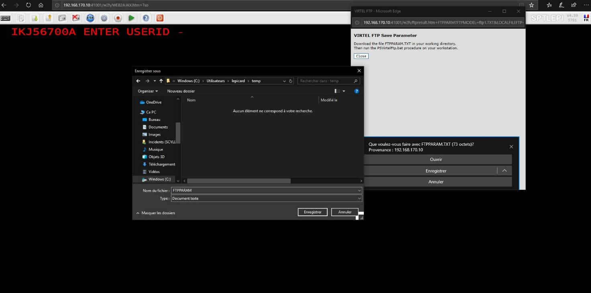
VIRTEL FTP Dialog part 3
Now select the destination file and click “Save”. If the file already exists, you will be prompted for permission to overwrite it. The “Download Complete” dialog appears when the file has been saved. Once the file has downloaded, run the PSVirtelFtp.bat procedure. This should be setup as a shortcut on your desktop.
If the password was defined by a”?” in the template, the following dialog will appear.
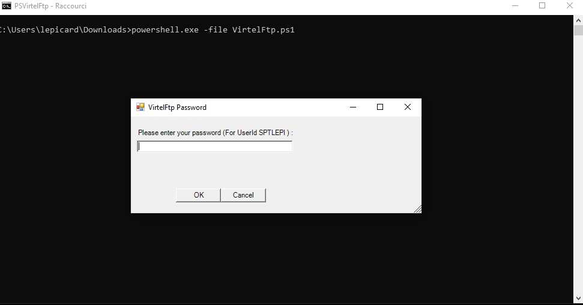
VIRTEL FTP Entering your password
After entering the password, the transfer will be executed, and the following console log should be displayed.
VIRTEL FTP Console Log
.The last line of the execution report in the DOS window provides information on the execution status.
Selecting a PC Codepage for FTP file transfer
Users can select a PC Codepage for FTP file transfer. Possible values are: -
Windows (CP-1252) : CP-1252 ASCII-EBCDIC translation table.
MS-DOS (CP-850) : CP-850 ASCII-EBCDIC translation table. This depends on the value of the COUNTRY parameter specified in the VIRTCT. If this value is “FR”, “DE” or “BE”, system will use corresponding table FR-850, DE-850 or BE-850. If the specified country value is different, by default the BE-850 table will be used to support CECP 500 international EBCDIC.
Saving and reusing FTP file transfer parameters
Users who frequently use the same FTP file transfers can save the parameters for later reuse. To save a FTP file transfer, enter the dataset name and the type of transfer, and click the “Save” button: -

VIRTEL FTP Receive dialog saved transfers
The user can then choose a name for the saved transfer and click “OK” to save the parameters. At the next transfer, the user clicks the name of the saved transfer to retrieve the parameters, then clicks “Generate Parameter” to start the generate.

VIRTEL FTP Saving the FTP file transfer parameters
Users can save transfer parameters for “Generate Parameter”. The parameters are saved in browser local storage. The number of sets of parameters which can be saved is limited only by the amount of local storage available.
Showing / Hiding FTP File Transfer
The administrator may wish to prevent users from accessing features like FTP File Transfer. This example shows how to hide the toolbar option by setting a parameter in the w2hparm.
/*
* set the value of the “Show toggle button for VirtelFtp”.
*/
w2hparm.showftp = true;
Example w2hparm.js for hiding FTP File Transfer
Users may also use the Virtel Settings Display options and deselect the VirtelFTP toggle.
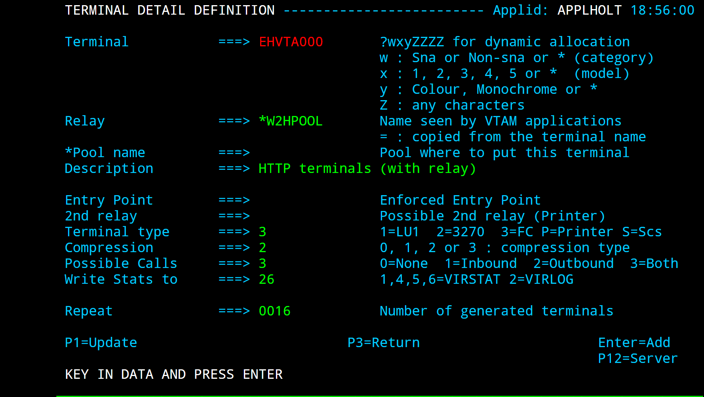
VIRTEL FTP Toggle the FTP button in the settings panel
If the default value is used, users can show this function for their own usage by checking “Show the toggle button for VirtelFtp” in the Display tab of the settings panel.
Debugging VirtelFTP
FAQs
How to specify a codepage in a URL
Some users want to see square brackets displayed in their VWA presentation, for example “C” programmers. The default UTF8 / MVS codepage translation doesn’t transalate square brackets correctly. Users must define the correct codepage in the URL. In this instance for square brackets it is codepage IBM1047.
http://10.20.170.71:41001/w2h/WEB2AJAX.htm+Tso?codepage=IBM1047
How to use the TSO OMVS panel command with VWA
TSO OMVS writes to the screen after 20 seconds changing the status from RUNNING to INPUT. This asynchronous nature forces Virtel to generate a HTML page which updates the whole screen, erasing any partially entered input field. Once the screen is in INPUT mode OMVS will not write to the screen in this ASYNC fashion anymore. The work around for this is to wait for the status change before entering any input. Alternatively you can put the screen into INPUT mode immediately by pressing F12=Retrieve, and then pressing Home and End to clear the input area.
Another solution is to use PuTTY to connect to the OMVS shell via rlogin to port 513. This solution avoids many of the other usability problems which are inherent in the OMVS shell.
Can VIRTEL WEB ACCESS emulate z/OS Operator consoles
Technically VIRTEL does not support the OSA-ICC console server because it is based on the tn3270 protocol which VIRTEL does not use. But in any case it probably would not make sense to put consoles under VIRTEL control because the consoles need to be operational during IPL before TCP/IP and VIRTEL are started. So we would expect customers to continue to run tn3270 emulators on those PCs which are used as z/OS operator consoles.
Can I customize hotspot recognition
The regular expressions which control hotspot recognition may be overridden by setting VIR3270.customPfKeysHotspotRegex and/or VIR3270.customUrlHotspotsRegex in a customized javascript member. For example, an application requires strings of the format “PFnn-caption” to be recognized as PF hotspots. The customized code in the javascript member would look like would be:
function after_responseHandle(o, url, xtim) {
VIR3270.customPfKeysHotspotRegex = /(P?F\d{1,2}|PA[1-3]|ENTER|CLEAR)((?:\/P?F\d{1,2})?\s*[=:-])/;
}
Appendix
Appendix A - Virtel Macro Quick reference Sheet
Virtel macros capture keystroke operations which can subsequently be used to automate 3270 functions. These user captured macros are stored within a file called macros.json. This file is a JavaScript array of JSON objects, with each object representing a user macro.
Example of a Macro. JSON file
{«macros»:[
{«name»:»mylogon»,»rev»:2,»def»:[{«txt»:»sptholt»},»ENTER»,{«txt»:»password»},»ENTER»,»ENTER»,»ENTER»],»mapping»:{«key»:»ctrl»,»keycode»:76}},
{«name»:»logoff»,»rev»:1,»def»:[{«txt»:»=x»},»ENTER»,{«txt»:»logoff»},»ENTER»],»mapping»:{«key»:»ctrl»,»keycode»:79}},
{«name»:»logon»,»rev»:2,»def»:[«Tab»,»Down»,{«txt»:»sptholx»},»ENTER»,{«txt»:»PASSWORD»},»ENTER»,»ENTER»,»ENTER»],»mapping»:{«key»:»alt»,»keycode»:76}}
],»fmt»:2}
Macro Formats and Commands
The format of the MACROS.JSON file is an embedded JSON structure. Each name structure represents a keystroke macro identified by the “name” keyword. * Name: The name of the macro entry. * Rev: The «rev» is a user revision keyword. * Def: The «def» keyword identifies the commands and entry values
Key Identifiers
key(ENTER) key(PF1-24) key(PA1-3) key(Down) key(Up) key(Left) key(Right) key(Newline) Key(Tab) Key(Backtab)
key(CLEAR) key(Home) key(ATTN) key(End) key(Bksp) key(ErEof) key(InsToggle) key(Del) key(Reset)
key(FieldMark) key(Dup)
Built in functions
waitScreen() Virtel will wait for a 3270 response before proceeding.
Built in functions:Literal values - key stroke in VWA editor
- ::
“ISPF” Any string of characters to input into a 3270 screen, example ISPF
Used for Cut/Paste in a Macro
move(pos)
copy(startRow,startCol,endRow,endCol)
paste(pos)
paste(pos,nbRows,nbCols)
Trademarks
SysperTec, the SysperTec logo, syspertec.com and VIRTEL are trademarks or registered trademarks of SysperTec Communication Group, registered in France and other countries.
IBM, VTAM, CICS, IMS, RACF, DB2, z/OS, WebSphere, MQSeries, System z are trademarks or registered trademarks of International Business Machines Corp., registered in United States and other countries.
Adobe, Acrobat, PostScript and all Adobe-based trademarks are either registered trademarks or trademarks of Adobe Systems Incorporated in the United States and other countries.
Microsoft, Windows, Windows NT, and the Windows logo are trademarks of Microsoft Corporation in the United States and other countries.
UNIX is a registered trademark of The Open Group in the United States and other countries. Java and all Java-based trademarks and logos are trademarks or registered trademarks of Oracle and/or its affiliates.
Linux is a trademark of Linus Torvalds in the United States, other countries, or both.
Other company, product, or service names may be trademarks or service names of others.